对一组数据进行排序时，要考虑这组数据有什么样的特征。
包含大量重复元素->三路快排
近乎有序->插入排序
取值范围有限->计数排序
要求稳定排序->归并排序
使用链表存储-> 归并排序
数据量很大->外部排序
当没有思路时
尝试简单测试用例
暴力法
O(f(n))表示算法执行的上界
最后一项，nlog(n)是数组全部元素比较的次数，s指的是确定两个字符串的字典序需要O(s).
因此，最终的时间复杂度是：O(nslog(s)+snlog(n))

第一个，只需要ret和i
第二个，递归深度为n


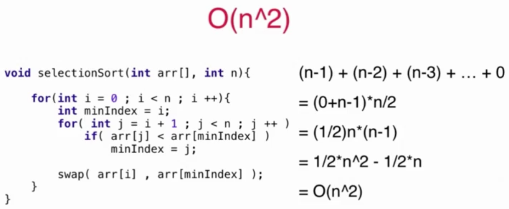

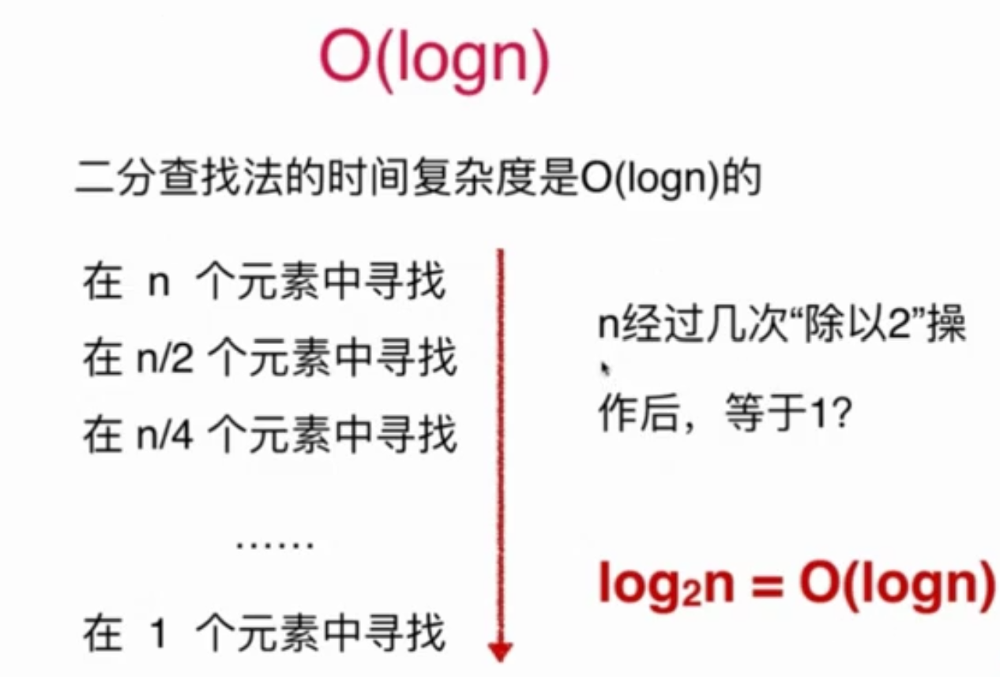

reverse函数的时间复杂度是O(m/2)=O(m)，其中m指的是s的长度，又由于s的长度和while中执行次数是一样的(每执行一次，s多一位)，因此也是s的长度也是logn，从而整体的时间复杂度是O(2logn)=O(logn).

可见，log的底并不重要。
第一重循环log(n)次，因此整体时间复杂度是O(nlogn).

动态数组
添加/删除一个元素的均摊复杂度是O(1)
添加元素
但删除元素时可能出现复杂度震荡，此时位于数组长度的一半位置
解决：
二分查找的代码
二分查找的另一种代码
问题：Move Zeros
解法1：用一个新的数组按顺序存储nums中的非零元素，然后将这个数组中的元素覆盖在nums，nums后续位置全部置0：
时间复杂度：O(n)
空间复杂度：O(n)
优化上一节的问题。
解法2：不使用额外数组，直接覆盖
时间复杂度：O(n)
空间复杂度：O(1)
解法3：将覆盖改为交换
时间复杂度：O(n)
空间复杂度：O(1)
解法4：当整个数组全部非零时，解法3需要自己和自己做交换，可以改进
时间复杂度：O(n)
空间复杂度：O(1)
课后习题：
不需要考虑数组中超出新长度后面的元素。
不要使用额外的数组空间，你必须仅使用 O(1) 额外空间并 原地 修改输入数组。
解法1：两个指针一前一后向右走
class Solution:
def removeElement(self, nums: List[int], val: int) -> int:
i,j=0,0
while j<len(nums):
if nums[j]!=val:
nums[i]=nums[j]
i+=1
j+=1
return i时间复杂度：O(n)，其中 n 为序列的长度。我们只需要遍历该序列至多两次。
空间复杂度：O(1)。我们只需要常数的空间保存若干变量。
解法2：两个指针一个向右走，一个向左走
class Solution:
def removeElement(self, nums: List[int], val: int) -> int:
i,j=0,len(nums)-1
while i<=j:
if nums[i]==val:
nums[i]=nums[j]
j-=1
else:
i+=1
return i时间复杂度：O(n)，其中 n 为序列的长度。我们只需要遍历该序列至多一次。
空间复杂度：O(1)。我们只需要常数的空间保存若干变量。
我的解法：基于解法2，加入了判断j位置元素是否为val(内部while)，保证只做一次赋值操作。
class Solution:
def removeElement(self, nums: List[int], val: int) -> int:
i,j=0,len(nums)-1
while i<=j:#j后面全是为val的
if nums[i]==val:#该处理了
if nums[j]!=val:
nums[i]=nums[j]
j-=1
i+=1#不加也能过，但是加了可以少判断一次
else:
while i<=j and nums[j]==val:
j-=1
else:
i+=1
return i时间复杂度：O(n方？)，其中 n 为序列的长度。我们只需要遍历该序列至多一次。
空间复杂度：O(1)。我们只需要常数的空间保存若干变量。
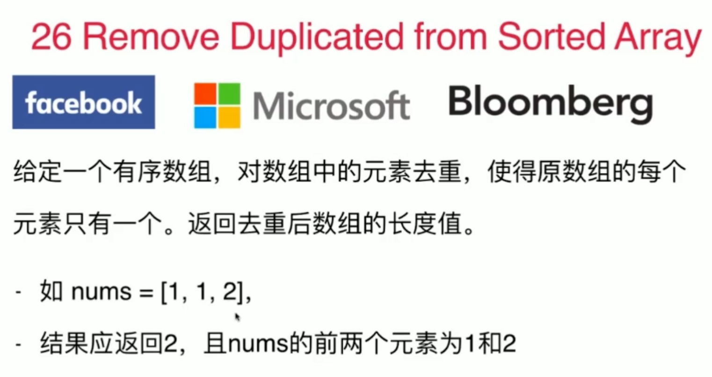
不需要考虑数组中超出新长度后面的元素。
不要使用额外的数组空间，你必须在 原地 修改输入数组 并在使用 O(1) 额外空间的条件下完成。
注意有序这个条件！
我的解法：使用双指针，慢指针i以及慢指针i之前的元素都是不重复的，快指针j用于判断当前遍历到的元素是否重复（使用last指向当前慢指针维护的最右边的一个元素）
class Solution:
def removeDuplicates(self, nums: List[int]) -> int:
n=len(nums)
if n==0:#不加这个判断也能AC
return 0
i=0#i以及i之前的元素都不重复
j=1#j遍历
while j<n:
last=nums[i]
if nums[j]!=nums[i]:
i+=1
j+=1
else:
j+=1
if j<n and nums[j]!=last:
nums[i+1]=nums[j]
i+=1
return i+1官方代码：快指针表示遍历数组到达的下标位置，慢指针表示下一个不同元素要填入的下标位置，初始时两个指针都指向下标 1。不需要考虑0，因为当数组的长度大于 0时，数组中至少包含一个元素，在删除重复元素之后也至少剩下一个元素。
class Solution:
def removeDuplicates(self, nums: List[int]) -> int:
if not nums:
return 0
n = len(nums)
fast = slow = 1
while fast < n:
#if nums[fast] != nums[slow - 1],这句和下面这句效果一样，但这样写能够和下一题官方题解统一起来，所以按照这句来理解比较好。因为slow维护当前处理好的序列，指向当前待处理元素的位置。
if nums[fast] != nums[fast - 1]:#新的元素出现
nums[slow] = nums[fast]
slow += 1
fast += 1
return slow时间复杂度：O(n)，其中 n 是数组的长度。快指针和慢指针最多各移动 n 次。
空间复杂度：O(1)。只需要使用常数的额外空间。

不要使用额外的数组空间，你必须在 原地 修改输入数组 并在使用 O(1) 额外空间的条件下完成。
因为空间复杂度要求O(1)，所以不能哈希了。
官方解法
和上一题差不多，但没有Python的，我根据其它语言改写的Python版本
class Solution:
def removeDuplicates(self, nums: List[int]) -> int:
i,j=2,2#i指向下一个待补充的位置，j遍历
n=len(nums)
while j<n:
if nums[j]!=nums[i-2]:#必须是i-2！！！
nums[i]=nums[j]
i+=1
j+=1
return i第三方题解通用解法：拓展到了最多保留重复的k个数。
由于是保留 k 个相同数字，对于前 k 个数字，我们可以直接保留
对于后面的任意数字，能够保留的前提是：与当前写入的位置前面的第 k 个元素进行比较，不相同则保留
class Solution:
def removeDuplicates(self, nums: List[int]) -> int:
def solve(k):
u = 0#u指向当前待处理元素位置
for x in nums:
if u < k or nums[u - k] != x:
nums[u] = x
u += 1
return u
return solve(2)以上两题思路是一样的：把所有不重复元素进行保留 可以通过双指针来实现 (该思维框架可以总结成模板运用到很多类似题)：即定义两个指针left和right，right从左到右把所有元素扫一遍，将不重复k次的元素赋给left的下一位。

计数排序：
3路快排：
课后习题：
注意：最终，合并后数组不应由函数返回，而是存储在数组 nums1 中。为了应对这种情况，nums1 的初始长度为 m + n，其中前 m 个元素表示应合并的元素，后 n 个元素为 0 ，应忽略。nums2 的长度为 n
可以直接合并然后暴力排序，也可以开辟一个新数组，但是这样空间复杂度都是O(m+n).
数组有序！可以用双指针，此时空间复杂度为O(1)
如果直接合并到数组 nums1中，nums1中的元素可能会在取出之前被覆盖。那么如何直接避免覆盖 nums1中的元素呢？观察可知，nums1的后半部分是空的，可以直接覆盖而不会影响结果。因此可以指针设置为从后向前遍历，每次取两者之中的较大者放进 nums1的最后面。
class Solution:
def merge(self, nums1: List[int], m: int, nums2: List[int], n: int) -> None:
"""
Do not return anything, modify nums1 in-place instead.
"""
i,j=m-1,n-1#遍历
tail=m+n-1#tail后面是处理完的有序序列，不包括tail
while i>=0 or j>=0:
#nums1处理完了
if i==-1:
nums1[tail]=nums2[j]
j-=1
#nums2处理完了
elif j==-1:
nums1[tail]=nums1[i]
i-=1
elif nums1[i] > nums2[j]:
nums1[tail]=nums1[i]
i-=1
else:
nums1[tail]=nums2[j]
j-=1
tail-=1
请注意，你需要找的是数组排序后的第 k 个最大的元素，而不是第 k 个不同的元素。
方法1：基于快速排序，改为快速选择。
class Solution:
def partition(self,nums,left,right):
pivot=right
key=nums[pivot]
while left < right:
while left < right and nums[left]<=key:
left+=1
while left < right and nums[right]>=key:
right-=1
#到这里，nums[left]>pivot，nums[right]<pivot，所以接下来就需要交换一下这两者
nums[left],nums[right]=nums[right],nums[left]
nums[left],nums[pivot]=key,nums[left]#必须是交换才可以！！！！
return left
#普通快排，这里用不到 ，只是回顾一下
def quicksort(self,nums, left, right):
if left < right:
index = self.partition(nums, left, right)
self.quicksort(nums, left, index-1)
self.quicksort(nums, index+1, right)
#改编自quicksort
def topk_split(self,nums, k, left, right):
#寻找到第k个数停止递归，使得nums数组中index左边是前k个小的数，index右边是后面n-k个大的数
if (left<right):
index = self.partition(nums, left, right)
print(index)
if index==k:
print('找到',index)
return
elif index < k:
self.topk_split(nums, k, index+1, right)
else:
self.topk_split(nums, k, left, index-1)
def findKthLargest(self, nums, k: int) -> int:
left,right=0,len(nums)-1
#self.quicksort(nums,left,right)
self.topk_split(nums,len(nums)-k,left,right)
return nums[len(nums)-k]如果pivot取值为left，则需要调换一下两个while的顺序：
def partition(self,nums,left,right):
pivot=left
key=nums[pivot]
while left < right:
while left < right and nums[right]>=key:
right-=1
while left < right and nums[left]<=key:
left+=1
#到这里，nums[left]>key，nums[right]<key，所以接下来就需要交换一下这两者
nums[left],nums[right]=nums[right],nums[left]
nums[left],nums[pivot]=key,nums[left]#必须是交换才可以！！！！
return left方法2：堆排序
调包：
import heapq
class Solution:
def findKthLargest(self, nums: List[int], k: int) -> int:
maxHeap = []
for x in nums:
heapq.heappush(maxHeap, -x)
for _ in range(k - 1):
heapq.heappop(maxHeap)
return -maxHeap[0]手写堆：
先复习一下堆：
堆是完全二叉树

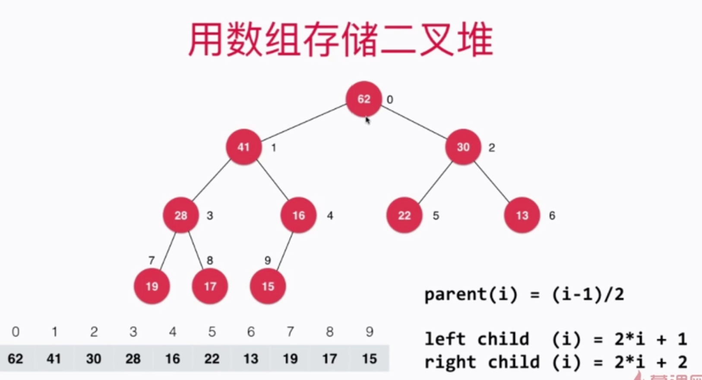
原地堆排序代码
#原地堆排序
#最后一个非叶子节点的索引是(n-1)/2,(n-2)/2 ？都可以吧，前者多了一次不通过的判断
def heapSort(arr,n):
#建堆
for i in range((n-2)//2,-1,-1):
shiftdown(arr,n,i)
print(arr)#[999, 9, 10, 8, 5, 1, 1, 2]
#原地堆排序
for i in range(n-1,-1,-1):
arr[0],arr[i]=arr[i],arr[0]
shiftdown(arr,i,0)
print(arr)#[1, 1, 2, 5, 8, 9, 10, 999]
def shiftdown(arr,n,k):
print(k)
while 2*k+1<n:
j=2*k+1
if j+1<n and arr[j+1]>arr[j]:
j+=1
if arr[k]>=arr[j]:
break
arr[k],arr[j]=arr[j],arr[k]
k=j
#测试栗子
arr=[4,10,9,1,2,5,1,999,8]
n=9
heapSort(arr,n)
print(arr)#[1, 1, 2, 5, 8, 9, 999,3]先构建堆: 从最后一个非叶子节点开始，从下往上、从右到左依次进行比较
那么，如何确定最后一个非叶子节点的下标？
假设给定的序列长度为n，则最后一个孩子节点的下标为n-1，设其父节点下标为p，分两种情况讨论：
最终节点为左孩子节点，则有n-1=2*p+1，即p=(n-2)/2
最终节点为右孩子节点，则有n-1=2*p+2，即p=(n-3)/2
根据地板除向下取整的特性，我们选择p=(n-2)//2就都能满足这两种情况。
class Solution:
#原地堆排序
#最后一个非叶子节点的索引是(n-1)/2,(n-2)/2 ？都可以吧，前者多了一次不通过的判断
def heapSort(self,arr,n):
#建堆，后续叶子节点已经是满足堆的定义了
for i in range((n-2)//2,-1,-1):
self.shiftdown(arr,n,i)
#print(arr)#[999, 10, 9, 8, 2, 5, 1, 1, 4]
#原地堆排序
for i in range(n-1,-1,-1):
arr[0],arr[i]=arr[i],arr[0]
self.shiftdown(arr,i,0)
#print(arr)#[1, 1, 2, 4, 5, 8, 9, 10, 999]
def findKthLargest(self, nums: List[int], k: int) -> int:
n = len(nums)
#建堆
for i in range((n-2)//2,-1,-1):
self.shiftdown(nums,n,i)
#求解
for i in range(n-1,n-k,-1):
nums[0], nums[i] = nums[i], nums[0]
self.shiftdown(nums,i,0)
return nums[0]#经过k-1次操作，此时堆顶就是第k大的数
def shiftdown(self,arr,n,k):
#print(k)
while 2*k+1<n:
j=2*k+1
if j+1<n and arr[j+1]>arr[j]:
j+=1
if arr[k]>=arr[j]:
break
arr[k],arr[j]=arr[j],arr[k]
k=j
函数应该以长度为 2 的整数数组的形式返回这两个数的下标值。numbers 的下标 从 1 开始计数 ，所以答案数组应当满足 1 <= answer[0] < answer[1] <= numbers.length.
你可以假设每个输入 只对应唯一的答案 ，而且你 不可以 重复使用相同的元素。

二分的时间复杂度是O(nlogn)
class Solution:
def twoSum(self, numbers: List[int], target: int) -> List[int]:
n = len(numbers)
for i in range(n):
low, high = i + 1, n - 1
while low <= high:
mid = (low + high) // 2
if numbers[mid] == target - numbers[i]:
return [i + 1, mid + 1]
elif numbers[mid] > target - numbers[i]:
high = mid - 1
else:
low = mid + 1
return [-1, -1]对撞指针法：
时间复杂度：O(n)，其中 n 是数组的长度。两个指针移动的总次数最多为 n 次。
空间复杂度：O(1)。
课后习题：
我的解法，和官方解法3相同，使用对撞指针，空间复杂度O(1)，时间复杂度O(字符串长度)：
class Solution:
def isPalindrome(self, s: str) -> bool:
if not s:
return True
def check_valid(c):
if c.isdigit() or c.isalpha():
return True
else:
return False
n=len(s)
i,j=0,n-1
while i<j:
while not check_valid(s[i]) and i<j:
i+=1
while not check_valid(s[j]) and i<j:
j-=1
t1,t2=s[i],s[j]
if t1.isalpha():
t1=t1.lower()
if t2.isalpha():
t2=t2.lower()
if i<j and t1!=t2:
return False
i+=1
j-=1
return True
直接对撞。
我的解法：对撞指针：
class Solution:
def reverseVowels(self, s: str) -> str:
n=len(s)
lis=['a','e','i','o','u','A','E','I','O','U']
slis=[i for i in s]
i=0
j=n-1
while i<j:
while i<j and s[i] not in lis:
i+=1
while i<j and s[j] not in lis:
j-=1
slis[i],slis[j]=slis[j],slis[i]
i+=1
j-=1
return ''.join(slis)
还是对撞指针，理论证明略
class Solution:
def maxArea(self, height: List[int]) -> int:
n=len(height)
i,j=0,n-1
maxArea=0
while i<j:
area=min(height[i],height[j])*(j-i)
if area>maxArea:
maxArea=area
if height[i]<height[j]:
i+=1
else:
j-=1
return maxArea双索引技术：滑动窗口
滑动窗口算法可以用以解决数组/字符串的子元素问题，它可以将嵌套的循环问题，转换为单循环问题，降低时间复杂度。

暴力解法可以优化求和操作，使得时间复杂度变成O(n^2)，官方代码如下：
class Solution:
def minSubArrayLen(self, s: int, nums: List[int]) -> int:
if not nums:
return 0
n = len(nums)
ans = n + 1
for i in range(n):
total = 0
for j in range(i, n):
total += nums[j]
if total >= s:
ans = min(ans, j - i + 1)
break
return 0 if ans == n + 1 else ans
滑动窗口：
注意到连续的条件

我改写成了Python版本的：
class Solution:
def minSubArrayLen(self, s: int, nums: List[int]) -> int:
if not nums:
return 0
n = len(nums)
res = n + 1
i,j = 0, -1#j从0开始会报错
sum = 0
while i < n:
if j+1<n and sum<s:
sum+=nums[j+1]
j+=1
else:
sum-=nums[i]
i+=1
if sum>=s:
res=min(res,j-i+1)
return 0 if res == n + 1 else res官方提供的Python版本
class Solution:
def minSubArrayLen(self, s: int, nums: List[int]) -> int:
if not nums:
return 0
n = len(nums)
ans = n + 1
start, end = 0, 0
total = 0
while end < n:
total += nums[end]
while total >= s:
ans = min(ans, end - start + 1)
total -= nums[start]
start += 1
end += 1
return 0 if ans == n + 1 else ans还是滑动窗口的栗子

对应的Python版本代码（改自上述C++代码以及官方代码）：
class Solution:
def lengthOfLongestSubstring(self, s: str) -> int:
# 哈希集合，记录每个字符是否出现过
occ = set()
n = len(s)
# 右指针，初始值为 -1，相当于我们在字符串的左边界的左侧，还没有开始移动
i,rk, ans =0, -1, 0
while i<n:
if rk + 1 < n and s[rk + 1] not in occ:
# 不断地移动右指针
occ.add(s[rk + 1])
rk += 1
else:
# 左指针向右移动一格，移除一个字符
occ.remove(s[i])
i+=1
# 第 i 到 rk 个字符是一个极长的无重复字符子串
ans = max(ans, rk - i + 1)
return ans官方提供的代码（不顺）：
class Solution:
def lengthOfLongestSubstring(self, s: str) -> int:
# 哈希集合，记录每个字符是否出现过
occ = set()
n = len(s)
# 右指针，初始值为 -1，相当于我们在字符串的左边界的左侧，还没有开始移动
rk, ans = -1, 0
for i in range(n):
if i != 0:
# 左指针向右移动一格，移除一个字符
occ.remove(s[i - 1])
while rk + 1 < n and s[rk + 1] not in occ:
# 不断地移动右指针
occ.add(s[rk + 1])
rk += 1
# 第 i 到 rk 个字符是一个极长的无重复字符子串
ans = max(ans, rk - i + 1)
return ans课后习题：
什么情况下会想到滑动窗口法：
任何题目如果没有思路其实都可以想一下暴力解法。这道题暴力解法思路简单：
遍历任意i，j，使得i和j之间的子串长度，等于p串的长度。该子串称之为x。该步复杂度为O（n）。
判断x是否与p是异位词。是的话，则把i加入答案中。该步复杂度为O（n）。暴力法的复杂度为O（n^2）。显然不高效。
评论区滑动窗口+空间换时间的答案：
class Solution:
class Solution:
def findAnagrams(self, s: str, p: str) -> List[int]:
n, m, res = len(s), len(p), []
if n < m: return res
p_cnt = [0] * 26
s_cnt = [0] * 26
for i in range(m):
p_cnt[ord(p[i]) - ord('a')] += 1
s_cnt[ord(s[i]) - ord('a')] += 1
if s_cnt == p_cnt:
res.append(0)
for i in range(m, n):
s_cnt[ord(s[i - m]) - ord('a')] -= 1
s_cnt[ord(s[i]) - ord('a')] += 1
if s_cnt == p_cnt:
res.append(i - m + 1)
return res时间复杂度：O(n)，for循环有O(n)，数组的长度是常数，所以数组的比较也是常数级别的，那最终的时间复杂度就是O(n)
空间复杂度：O(1)，需要常数级别的额外空间
评论区滑动窗口+双指针解法（还没看懂，不想看了）：
class Solution:
def findAnagrams(self, s: str, p: str) -> List[int]:
n, m, res = len(s), len(p), []
if n < m: return res
p_cnt = [0] * 26
s_cnt = [0] * 26
for i in range(m):
p_cnt[ord(p[i]) - ord('a')] += 1
left = 0
for right in range(n):
cur_right = ord(s[right]) - ord('a')
s_cnt[cur_right] += 1
while s_cnt[cur_right] > p_cnt[cur_right]:
cur_left = ord(s[left]) - ord('a')
s_cnt[cur_left] -= 1
left += 1
if right - left + 1 == m:
res.append(left)
return res滑动窗口不怎么会，之后还得看。
我的解法，使用set
class Solution:
def intersection(self, nums1: List[int], nums2: List[int]) -> List[int]:
set1=set(nums1)
record=set()#记录结果
for i in nums2:
if i in set1:
record.add(i)
return list(record)
我的解法，使用dict
在Python中，字典是通过散列表（哈希表）实现的
class Solution:
def intersect(self, nums1, nums2):
s1,s2=nums1,nums2
#保证s1长度大于等于s2长度
if len(nums1)<len(nums2):
s1=nums2
s2=nums1
dic={}
for item in s1:
if item not in dic:
dic[item]=1
else:
dic[item]+=1
res=[]
for item in s2:
if item in dic.keys() and dic[item]>0:
res.append(item)
dic[item]-=1
return res
哈希表很牛，但元素是无序的。
因此，二分搜索树可以解决类似下面的有序问题，而哈希表不能：
课后习题：
我的解法，使用dict
class Solution:
def isAnagram(self, s: str, t: str) -> bool:
s1,s2=s,t
if len(s1)!=len(s2):
return False
dic={}
for item in s1:
if item not in dic:
dic[item]=1
else:
dic[item]+=1
for item in s2:
if item in dic and dic[item]>0:
dic[item]-=1
else:
return False
return True

解法1：哈希表
思想：如果出现重复，则陷入循环
第 1 部分我们按照题目的要求做数位分离，求平方和。
第 2 部分可以使用哈希集合完成。每次生成链中的下一个数字时，我们都会检查它是否已经在哈希集合中。
如果它不在哈希集合中，我们应该添加它。
如果它在哈希集合中，这意味着我们处于一个循环中，因此应该返回 false。def isHappy(self, n: int) -> bool:
def get_next(n):
total_sum = 0
while n > 0:
n, digit = divmod(n, 10)
total_sum += digit ** 2
return total_sum
seen = set()
#n!=1，说明还没不能确定n是快乐数，否则
#n not in seen ，说明还没有进入无限循环，否则进入了无限循环(此时n不等于1)
while n != 1 and n not in seen:
seen.add(n)
n = get_next(n)
return n == 1或者这样写
class Solution:
def isHappy(self, n: int) -> bool:
def get_next(n):
total_sum = 0
while n > 0:
n, digit = divmod(n, 10)
total_sum += digit ** 2
return total_sum
seen = set()
#n not in seen ，说明还没有进入无限循环，否则进入了无限循环(此时n不等于1)
while n not in seen:
if n==1:
return True
seen.add(n)
n = get_next(n)
return False#此时n in seen，出现不为1的重复数字解法2：快慢指针：
意识到我们实际有个链表，那么这个问题就可以转换为检测一个链表是否有环。因此我们在这里可以使用弗洛伊德循环查找算法。这个算法是两个奔跑选手，一个跑的快，一个跑得慢。在龟兔赛跑的寓言中，跑的慢的称为 “乌龟”，跑得快的称为 “兔子”。
我们不是只跟踪链表中的一个值，而是跟踪两个值，称为快跑者和慢跑者。在算法的每一步中，慢速在链表中前进 1 个节点，快跑者前进 2 个节点（对 getNext(n) 函数的嵌套调用）。
如果 n 是一个快乐数，即没有循环，那么快跑者最终会比慢跑者先到达数字 1。
如果 n 不是一个快乐的数字，那么最终快跑者和慢跑者将在同一个数字上相遇。
class Solution:
def isHappy(self, n: int) -> bool:
def get_next(number):
total_sum = 0
while number > 0:
number, digit = divmod(number, 10)
total_sum += digit ** 2
return total_sum
slow_runner = n
fast_runner = get_next(n)
#如果满足第一个条件，则不是环，则是快乐数；
#如果满足第二个条件，则有环，则不是快乐数
#两个条件必满足其一
while fast_runner != 1 and slow_runner != fast_runner:
slow_runner = get_next(slow_runner)#走一步
fast_runner = get_next(get_next(fast_runner))#走两步
return fast_runner == 1
你可以假设 pattern 只包含小写字母， str 包含了由单个空格分隔的小写字母。
class Solution:
def wordPattern(self, pattern: str, s: str) -> bool:
ch2word={}
word2ch={}
words=s.split(' ')
if len(words) !=len(pattern):
return False
for ch,word in zip(pattern,words):
#当前word是word2ch的key，但是对应value不是当前ch
#or 当前ch是ch2word的key，但是对应value不是当前word
if (word in word2ch and word2ch[word] !=ch) or (ch in ch2word and ch2word[ch]!=word):
return False
ch2word[ch]=word
word2ch[word]=ch
return True可以假设 s 和 t 长度相同。
每个出现的字符都应当映射到另一个字符，同时不改变字符的顺序。不同字符不能映射到同一个字符上，相同字符只能映射到同一个字符上，字符可以映射到自己本身。
使用哈希表，此时和上一题一样的代码：
class Solution:
def isIsomorphic(self, s: str, t: str) -> bool:
s2t,t2s={},{}
for i ,j in zip(s,t):
if (i in s2t and s2t[i]!=j) or (j in t2s and t2s[j]!=i):
return False
s2t[i]=j
t2s[j]=i
return True以上两道题一样的，只是第一题多做了个split.
对于第二个题，还有一种思路：
之前，我们判断 s 和 t 是否一一对应，通过对两个方向分别考虑来解决的。
这里的话，我们找一个第三方来解决，即，按照字母出现的顺序，把两个字符串都映射到另一个集合中。
举个现实生活中的例子，一个人说中文，一个人说法语，怎么判断他们说的是一个意思呢？把中文翻译成英语，把法语也翻译成英语，然后看最后的英语是否相同即可。
将第一个出现的字母映射成 1，第二个出现的字母映射成 2
对于 egg
e -> 1
g -> 2
也就是将 egg 的 e 换成 1, g 换成 2, 就变成了 122
对于 add
a -> 1
d -> 2
也就是将 add 的 a 换成 1, d 换成 2, 就变成了 122
egg -> 122, add -> 122
都变成了 122，所以两个字符串异构。代码的话，只需要将两个字符串分别翻译成第三种类型即可，比如翻译成数字串
我们也可以用两个 map 分别记录两个字符串每个字母的映射。将所有字母初始都映射到 0。记录过程中，如果发现了当前映射不一致，就可以立即返回 false 了。
class Solution:
def isIsomorphic(self, s, t):
n=len(s)
s_dic={}
t_dic={}
for i in range(n):
#当前的映射值是否相同
if s_dic.get(s[i],0)!=t_dic.get(t[i],0):
return False
#此时相等（都出现过 or 都没出现过）
#若都没出现过，则加入字典里，否则什么都不做
if s[i] not in s_dic:
s_dic[s[i]]=i+1
t_dic[t[i]]=i+1
return True这种思想其实可以直调用Python的index：
class Solution:
def isIsomorphic(self, s, t):
for i in range(len(s)):
if s.index(s[i]) != t.index(t[i]):
return False
return True
我的解法：哈希表(字典排序)：
class Solution:
def frequencySort(self, s: str) -> str:
dic={}
#将每个字符的出现频次存入哈希表
for le in s:
if le not in dic:
dic[le]=1
else:
dic[le]+=1
lis=sorted(dic.items(),key=lambda x:x[1],reverse=True)
res=[]
for k,v in lis:
for _ in range(v):
res.append(k)
return ''.join(res)时间复杂度：O(n+klogk)
O(n + k log k)，其中 n 是字符串 s 的长度，k是字符串 s 包含的不同字符的个数
遍历字符串统计每个字符出现的频率需要 O(n)的时间。
将字符按照出现频率排序需要 O(klogk) 的时间。
生成排序后的字符串，需要遍历 k 个不同字符，需要 O(k)的时间，拼接字符串需要 O(n)的时间。
空间复杂度：O(n+k)，其中 n 是字符串 s 的长度，k 是字符串 s 包含的不同字符的个数。空间复杂度主要取决于哈希表、列表和生成的排序后的字符串。


官方Python版本：
class Solution:
def twoSum(self, nums: List[int], target: int) -> List[int]:
hashtable = dict()
for i, num in enumerate(nums):
if target - num in hashtable:
return [hashtable[target - num], i]
hashtable[nums[i]] = i
return []课后习题：
注意：答案中不可以包含重复的三元组。
官方题解：
class Solution:
def threeSum(self, nums: List[int]) -> List[List[int]]:
n = len(nums)
nums.sort()
ans = list()
# 枚举 a
for first in range(n):
# 需要和上一次枚举的数不相同
if first > 0 and nums[first] == nums[first - 1]:
continue
# c 对应的指针初始指向数组的最右端
third = n - 1
target = -nums[first]
# 枚举 b
for second in range(first + 1, n):
# 需要和上一次枚举的数不相同
if second > first + 1 and nums[second] == nums[second - 1]:
continue
# 需要保证 b 的指针在 c 的指针的左侧
while second < third and nums[second] + nums[third] > target:
third -= 1
# 如果指针重合，随着 b 后续的增加
# 就不会有满足 a+b+c=0 并且 b<c 的 c 了，可以退出循环
if second == third:
break
if nums[second] + nums[third] == target:
ans.append([nums[first], nums[second], nums[third]])
return ans评论区比较易懂的代码：
class Solution:
def threeSum(self, nums: List[int]) -> List[List[int]]:
n=len(nums)
res=[]
if(not nums or n<3):
return []
nums.sort()
res=[]
for i in range(n):
if(nums[i]>0):
return res
#结果不能重复
#之所以只比较相邻，是因为数组已经做了排序
if(i>0 and nums[i]==nums[i-1]):
continue
L=i+1
R=n-1
while(L<R):
if(nums[i]+nums[L]+nums[R]==0):
res.append([nums[i],nums[L],nums[R]])
while(L<R and nums[L]==nums[L+1]):
L=L+1
while(L<R and nums[R]==nums[R-1]):
R=R-1
L=L+1
R=R-1
elif(nums[i]+nums[L]+nums[R]>0):
R=R-1
else:
L=L+1
return res时间复杂度：O(n^2)
空间复杂度：O(1)

和上题一样，官方貌似参考了上题中的评论区解法
class Solution:
def fourSum(self, nums: List[int], target: int) -> List[List[int]]:
quadruplets = list()
if not nums or len(nums) < 4:
return quadruplets
nums.sort()
length = len(nums)
for i in range(length - 3):
if i > 0 and nums[i] == nums[i - 1]:
continue
if nums[i] + nums[i + 1] + nums[i + 2] + nums[i + 3] > target:
break
if nums[i] + nums[length - 3] + nums[length - 2] + nums[length - 1] < target:
continue
for j in range(i + 1, length - 2):
if j > i + 1 and nums[j] == nums[j - 1]:
continue
if nums[i] + nums[j] + nums[j + 1] + nums[j + 2] > target:
break
if nums[i] + nums[j] + nums[length - 2] + nums[length - 1] < target:
continue
left, right = j + 1, length - 1
while left < right:
total = nums[i] + nums[j] + nums[left] + nums[right]
if total == target:
quadruplets.append([nums[i], nums[j], nums[left], nums[right]])
while left < right and nums[left] == nums[left + 1]:
left += 1
left += 1
while left < right and nums[right] == nums[right - 1]:
right -= 1
right -= 1
elif total < target:
left += 1
else:
right -= 1
return quadruplets
我的解法：双指针，在上面题代码上修改得到
class Solution:
def threeSumClosest(self, nums: List[int], target: int) -> int:
n=len(nums)
nums.sort()
print('nums',nums)
res=abs(target+10000)
for i in range(n):
L=i+1
R=n-1
while(L<R):
if(abs(nums[i]+nums[L]+nums[R]-target)<res):
ret=nums[i]+nums[L]+nums[R]#三数之和
res=abs(ret-target)
#因为有序
if nums[i]+nums[L]+nums[R]<target:
L=L+1
else:
R=R-1
return ret也可以这样，三数之和等于target时就直接返回，可以kuai一点点
class Solution:
def threeSumClosest(self, nums: List[int], target: int) -> int:
n=len(nums)
nums.sort()
print('nums',nums)
res=abs(target+10000)
for i in range(n):
L=i+1
R=n-1
while(L<R):
if(abs(nums[i]+nums[L]+nums[R]-target)<res):
ret=nums[i]+nums[L]+nums[R]#三数之和
res=abs(ret-target)
#因为有序
if nums[i]+nums[L]+nums[R]<target:
L=L+1
elif nums[i]+nums[L]+nums[R]>target:
R=R-1
else:
return nums[i]+nums[L]+nums[R]
return ret

我写的Python版本答案：
class Solution:
def fourSumCount(self, nums1: List[int], nums2: List[int], nums3: List[int], nums4: List[int]) -> int:
dic=dict()
for a in nums3:
for b in nums4:
if a+b not in dic:
dic[a+b]=1
else:
dic[a+b]+=1
cnt=0
for i in range(len(nums1)):
for j in range(len(nums2)):
if (-nums1[i]-nums2[j]) in dic:
cnt+=dic[-nums1[i]-nums2[j]]
return cnt官方代码更简洁，思想一样：
class Solution:
def fourSumCount(self, A: List[int], B: List[int], C: List[int], D: List[int]) -> int:
countAB = collections.Counter(u + v for u in A for v in B)
ans = 0
for u in C:
for v in D:
if -u - v in countAB:
ans += countAB[-u - v]
return ans课后习题
strs[i] 仅包含小写字母。
思路：组成这种词的不同字母个数是一样的，因此可以以此为key，value是包含了同一类Anagrams的list，最后返回value即可。
官方代码：
class Solution:
def groupAnagrams(self, strs: List[str]) -> List[List[str]]:
mp = collections.defaultdict(list)
for st in strs:
counts = [0] * 26
for ch in st:
counts[ord(ch) - ord("a")] += 1
# 需要将 list 转换成 tuple 才能进行哈希,list is not hashable!
mp[tuple(counts)].append(st)
print(mp)
return list(mp.values())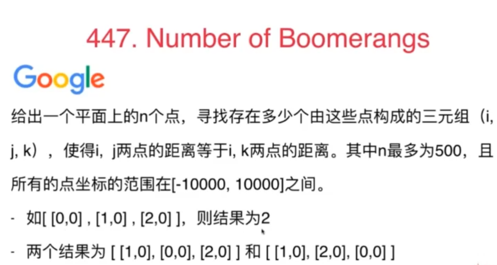
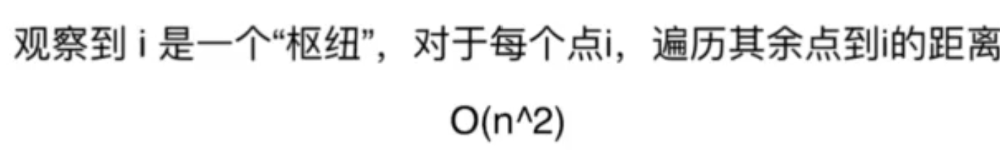
后面的if可省略：
解释一下：
哈希表的key是其余每一个点与第i个点（枢纽点）之间的距离，value是与第i个点之间的距离是当前key的点的个数。
那么，如果某个key对应的value=m，即对应m个这样的点，那么满足题意得点对组合总共有m*(m-1)个。
我改写的Python代码：
class Solution:
def numberOfBoomerangs(self, points: List[List[int]]) -> int:
n=len(points)
res=0
def cal_dist(i,j):
return (points[i][0]-points[j][0])**2+(points[i][1]-points[j][1])**2
for i in range(n):
dic=dict()
for j in range(n):
if j!=i:#可不要
dis=cal_dist(i,j)
if dis not in dic:
dic[dis]=1
else:
dic[dis]+=1
for k,v in dic.items():
if v>=2:
res+=v*(v-1)
return res时间复杂度：O(n^2)，其中 n 是数组长度
空间复杂度：O(n)
同样的思路，官方使用了defaultdict，使得代码更简单：
class Solution:
def numberOfBoomerangs(self, points: List[List[int]]) -> int:
ans = 0
for p in points:
cnt = defaultdict(int)
for q in points:
dis = (p[0] - q[0]) * (p[0] - q[0]) + (p[1] - q[1]) * (p[1] - q[1])
cnt[dis] += 1
for m in cnt.values():
ans += m * (m - 1)
return ans课后习题
points 中的所有点互不相同。
两两之差用乘法判断在不在一条直线上。(但是需要o(n^3)暴力判断)
class Solution:
def maxPoints(self, points: List[List[int]]) -> int:
# 三点在一条直线上时,斜率相等
# y2 - y1 = k * (x2 - x1), y3 - y2 = k * (x3 - x2)
# (y2 - y1) * (x3 - x2) = (y3 - y2) * (x2 - x1)
explored = set()
ans = 1
for i in range(len(points)):
for j in range(i+1, len(points)):
curr = 2
dx,dy = points[j][0] - points[i][0],points[j][1] - points[i][1]
for k in range(j+1, len(points)):
if (i,j) in explored or (i,k) in explored or (j,k) in explored:
continue
if dy * (points[k][0] - points[j][0]) == (points[k][1] - points[j][1]) * dx:
curr += 1
explored.add((j,k))
explored.add((i,k))
ans = max(ans, curr)
return ans使用哈希表统计同一kx+b的个数可以少一层循环。(需要使用辗转相除法避免除法精度问题)
class Solution:
def maxPoints(self, points: List[List[int]]) -> int:
def gcd(m, n):
return m if not n else gcd(n, m%n)
def getslope(p1, p2):
dx = p1[0] - p2[0]
dy = p1[1] - p2[1]
if dx == 0: return (p1[0], 0)
if dy == 0: return (0, p1[1])
d = gcd(dx, dy)
return (dx//d, dy//d)
res = 0
for i in range(len(points)):
d = defaultdict(lambda:0)
same, maxi = 1, 0
p1 = points[i]
for j in range(i+1, len(points)):
p2 = points[j]
if p1 == p2:
same += 1
else:
slope = getslope(p1, p2)
d[slope] += 1
maxi = max(maxi, d[slope])
res = max(res, same + maxi)
return res因为直线总是以经过外层循环的点，所以取一个斜率即可(一个点和一个斜率确定一条直线)
class Solution:
def maxPoints(self, points: List[List[int]]) -> int:
def hdiv(dividend, divisor, accuracy):
'''
功能: 完成高精度的除法
参数:
dividend: 被除数
divisor: 除数
accuracy: 除法精度
返回: 计算结果(字符串)
'''
# 定义存储结果的字符串
res = ''
# 定义保存正负数的变量
isNegative = False
# 确定正负号
if dividend < 0 and divisor > 0:
dividend = abs(dividend)
isNegative = True
elif divisor < 0 and dividend > 0:
divisor = abs(divisor)
isNegative = True
# 在结果添加正负号
if isNegative:
res += '-'
# 计算整数部分
integer = round(dividend // divisor)
# 将结果添加入结果
res += str(integer) + '.'
# 计算余数
remainder = dividend % divisor
# 计算小数部分
for i in range(accuracy):
dividend = remainder * 10
res += str(round(dividend // divisor))
remainder = dividend % divisor
return res
# k = (y2 - y1) / (x2 - x1), b = y - k * x
ans = 1
for i in range(len(points)):
d = Counter()
for j in range(i+1, len(points)):
if not points[j][0] - points[i][0]:
k = inf
else:
k = hdiv(points[j][1] - points[i][1],points[j][0] - points[i][0],10)
d[k] += 1
if d:
ans = max(ans, max(d.values()) + 1)
return ans不用gcd得代码也能过：
class Solution:
def maxPoints(self, points: List[List[int]]) -> int:
ans = 1
for i in range(len(points) - 1):
curr = Counter()
for j in range(i+1, len(points)):
dx, dy = points[j][0] - points[i][0], points[j][1] - points[i][1]
curr[dy / dx if dx else inf] += 1
ans = max(ans, max(curr.values()) + 1)
return anshard，这题以后再看吧~

固定长度的滑动窗口+哈希表
维护滑动窗口的长度为k+1：
比如k=3，那么i为0，j为3，满足j-i<=k，这样，i和j总共包含了k+1=4个元素（最多，因为i、和j还可以靠近些）
窗口再大的话，j-i就可能不满足小于等于k了
nonono，是k~
滑动窗口长度为k，对于新到来的的元素，它的下标和滑动窗口中最前面元素的下标恰好是k。
class Solution:
def containsNearbyDuplicate(self, nums: List[int], k: int) -> bool:
record=set()#长度最多为k的哈希表
n=len(nums)
for i in range(n):
if nums[i] in record:
return True
record.add(nums[i])
if len(record)==k+1:#长度大于k了
record.remove(nums[i-k])#删除最左边的元素，对应下标是i-k，画个图就清楚了
return False维护一个哈希表，里面始终最多包含 k 个元素，当出现重复值时则说明在 k 距离内存在重复元素（数组=[2,1,0,4,2]，画个图就知道为什么是维度哈希表长度最多为k了，同样最左边元素下标是i-k也可以看出来，画图吧）
每次遍历一个元素则将其加入哈希表中，如果哈希表的大小大于 k，则移除最前面的数字
时间复杂度：O(nlogn)，n为数组长度,set底层是二叉树，查找一次花费logn
空间复杂度：O(k)
课后习题
本节题目的简化版本，我写的Python代码如下：
class Solution:
def containsDuplicate(self, nums: List[int]) -> bool:
record=set()
n=len(nums)
for i in range(n):
if nums[i] in record:
return True
record.add(nums[i])
return False也可以排序，贴个官方代码：
class Solution {
public:
bool containsDuplicate(vector<int>& nums) {
sort(nums.begin(), nums.end());
int n = nums.size();
for (int i = 0; i < n - 1; i++) {
if (nums[i] == nums[i + 1]) {
return true;
}
}
return false;
}
};
直接在上一题的代码上稍加改动即可，具体的，改一下判断条件。
如何实现这一新的判断条件？看官方题解：
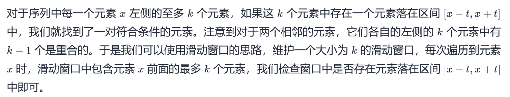

改写成Python代码，注意Python自带的set是无序的，因此要使用有序的set：
class Solution:
def containsNearbyAlmostDuplicate(self, nums: List[int], k: int, t: int) -> bool:
#record=set()#长度最多为k的哈希表
from sortedcontainers import SortedSet
record=SortedSet()#有序集合
n=len(nums)
for i in range(n):
#lis=[x for x in record if x>=nums[i]-t]
#if len(lis)>0:
# temp=min(lis)
#else:
# temp=None
#print(temp)
##查找第一个大于等于num-t的数的位置
index = record.bisect_left(nums[i] - t)
if index<len(record) and record[index]<=nums[i]+t:
return True
record.add(nums[i])
if len(record)==k+1:#长度大于k了
record.remove(nums[i-k])#删除最左边的元素，对应下标是i-k，画个图就清楚了
return False我写的Python版本：
# Definition for singly-linked list.
# class ListNode:
# def __init__(self, val=0, next=None):
# self.val = val
# self.next = next
class Solution:
def reverseList(self, head: ListNode) -> ListNode:
pre=None
cur=head
while cur:
next=cur.next
cur.next=pre
pre=cur
cur=next
return pre课后习题
m<= n
方法1：
# Definition for singly-linked list.
# class ListNode:
# def __init__(self, val=0, next=None):
# self.val = val
# self.next = next
class Solution:
def reverseBetween(self, head: ListNode, left: int, right: int) -> ListNode:
## 因为头节点有可能发生变化，使用虚拟头节点可以避免复杂的分类讨论
dummy_node = ListNode(-1)
dummy_node.next = head
#找到第left个节点的前驱节点a和第right个节点b
a=dummy_node
for i in range(left-1):
a=a.next
b=dummy_node
for i in range(right):
b=b.next
tou=a.next#待反转的部分链表的头
wei=b##待反转的部分链表的尾
suc=wei.next#第right个节点的后继节点
#截断得到待反转的链表
a.next=None
wei.next=None
#开始反转
def reverse_linked_list(head: ListNode):
# 也可以使用递归反转一个链表
pre = None
cur = head
while cur:
next = cur.next
cur.next = pre
pre = cur
cur = next
reverse_linked_list(tou)
#最后再连接起来
a.next=wei
tou.next=suc
return dummy_node.next时间复杂度：O(N)，其中 NNN 是链表总节点数。最坏情况下，需要遍历整个链表。
空间复杂度：O(1)。只使用到常数个变量。
关于加了个头节点的解释：

方法2：一次遍历「穿针引线」反转链表（头插法）
方法一的缺点是：如果 left 和 right 的区域很大，恰好是链表的头节点和尾节点时，找到 left 和 right 需要遍历一次，反转它们之间的链表还需要遍历一次，虽然总的时间复杂度为 O(N)，但遍历了链表 2 次，可不可以只遍历一次呢？答案是可以的。
整体思想是：在需要反转的区间里，每遍历到一个节点，让这个新节点来到反转部分的起始位置.
class Solution:
def reverseBetween(self, head: ListNode, left: int, right: int) -> ListNode:
# 设置 dummyNode 是这一类问题的一般做法
dummy_node = ListNode(-1)
dummy_node.next = head
pre = dummy_node
for _ in range(left - 1):
pre = pre.next
cur = pre.next
for _ in range(right - left):
next = cur.next
cur.next = next.next
next.next = pre.next
pre.next = next
return dummy_node.next介绍了一些链表的相关操作
课后习题
# Definition for singly-linked list.
# class ListNode:
# def __init__(self, val=0, next=None):
# self.val = val
# self.next = next
class Solution:
def deleteDuplicates(self, head: ListNode) -> ListNode:
if not head:
return head
p=head
while p.next:
if p.val ==p.next.val:
p.next=p.next.next
else:
p=p.next
return head
你应当 保留 两个分区中每个节点的初始相对位置。
我看了题解后独立写的代码：
# Definition for singly-linked list.
# class ListNode:
# def __init__(self, val=0, next=None):
# self.val = val
# self.next = next
class Solution:
def partition(self, head: ListNode, x: int) -> ListNode:
small_dummy=ListNode(101)
large_dummy=ListNode(101)
small,large=small_dummy,large_dummy#工作指针
while head:
if head.val<x:
small.next=head
small=small.next
else:
large.next=head
large=large.next
head=head.next
large.next=None
small.next=large_dummy.next
return small_dummy.next时间复杂度：O(n)
空间复杂度：O(1)，因为只生成了两个初始的头结点，之后的操作都是在原链表上进行的。
请尝试使用原地算法完成。你的算法的空间复杂度应为 O(1)，时间复杂度应为 O(nodes)，nodes 为节点总数。
# Definition for singly-linked list.
# class ListNode:
# def __init__(self, val=0, next=None):
# self.val = val
# self.next = next
class Solution:
def oddEvenList(self, head: ListNode) -> ListNode:
if not head:
return head
odd=head#奇
evenHead=head.next#记录，后面连接时用到
even=evenHead#偶
while even and even.next:
odd.next=even.next
odd=odd.next
even.next=odd.next
even=even.next
#连接
odd.next=evenHead
return head
你可以假设除了数字 0 之外，这两个数都不会以 0 开头。
并且每个节点只能存储 一位 数字。
# Definition for singly-linked list.
# class ListNode:
# def __init__(self, val=0, next=None):
# self.val = val
# self.next = next
class Solution:
def addTwoNumbers(self, l1: ListNode, l2: ListNode) -> ListNode:
if l1 == None:
return l2
if l2 == None:
return l1
dummy=ListNode(0)
p=dummy
carry=0#进位
while l1 and l2:
p.next=ListNode((l1.val+l2.val+carry)%10)
carry=(l1.val+l2.val+carry)//10#更新进位，取值为0或者一个0到9的数字
l1=l1.next
l2=l2.next
p=p.next
if l2:
while l2:
p.next=ListNode((l2.val+carry)%10)
carry=(l2.val+carry)//10#更新进位，取值为0或者一个0到9的数字
l2=l2.next
p=p.next
if l1:
while l1:
p.next=ListNode((l1.val+carry)%10)
carry=(l1.val+carry)//10#更新进位，取值为0或者一个0到9的数字
l1=l1.next
p=p.next
if carry !=0:#if carry==1
p.next=ListNode(carry)
return dummy.next
进阶：如果输入链表不能修改该如何处理？换句话说，不能对列表中的节点进行翻转()
本题的主要难点在于链表中数位的顺序与我们做加法的顺序是相反的，为了逆序处理所有数位，我们可以使用栈：把所有数字压入栈中，再依次取出相加。计算过程中需要注意进位的情况。
我怎么就没想到。。。
# Definition for singly-linked list.
# class ListNode:
# def __init__(self, val=0, next=None):
# self.val = val
# self.next = next
class Solution:
def addTwoNumbers(self, l1: ListNode, l2: ListNode) -> ListNode:
s1, s2 = [], []
while l1:
s1.append(l1.val)
l1 = l1.next
while l2:
s2.append(l2.val)
l2 = l2.next
ans = None
carry = 0
while s1 or s2 or carry != 0:
a = 0 if not s1 else s1.pop()
b = 0 if not s2 else s2.pop()
cur = a + b + carry
carry = cur // 10
cur %= 10
#头插
curnode = ListNode(cur)
curnode.next = ans
ans = curnode
return ans
不设虚拟头节点：需要单独对第一个节点进行处理
设置虚拟头节点：方便，统一
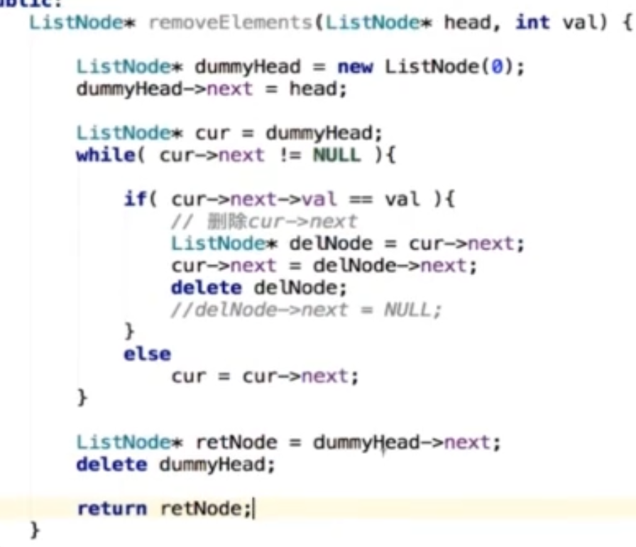
课后习题
我写的答案：
# Definition for singly-linked list.
# class ListNode:
# def __init__(self, val=0, next=None):
# self.val = val
# self.next = next
class Solution:
def deleteDuplicates(self, head: ListNode) -> ListNode:
if not head:
return head
dummyHead=ListNode(-1000)
dummyHead.next=head
pre=dummyHead
p=dummyHead.next
while p and p.next:
if p.val==p.next.val:
temp=p.val
while p and p.val==temp:
p=p.next
pre.next=p
else:
pre=p
p=p.next
return dummyHead.next时间复杂度：O(n)，其中 n 是链表的长度。
空间复杂度：O(1).
我的答案：
# Definition for singly-linked list.
# class ListNode:
# def __init__(self, val=0, next=None):
# self.val = val
# self.next = next
class Solution:
def mergeTwoLists(self, l1: ListNode, l2: ListNode) -> ListNode:
if not l1:
return l2
if not l2:
return l1
#两者都不为空
dummyHead=ListNode()
p=dummyHead#新链表的虚拟头节点
p1,p2=l1,l2#遍历两个链表
while p1 or p2:
#l2遍历结束
if not p2:
p.next=p1
p=p.next
p1=p1.next
if not p1:
break
#l1遍历结束
if not p1:
p.next=p2
p=p.next
p2=p2.next
if not p2:
break
#l1和l2都还没遍历结束
if p1 and p2:
if p1.val<p2.val:
p.next=p1
p=p.next
p1=p1.next
else:
p.next=p2
p=p.next
p2=p2.next
return dummyHead.next官方的答案更简洁，更易懂
class Solution:
def mergeTwoLists(self, l1: ListNode, l2: ListNode) -> ListNode:
prehead = ListNode(-1)
prev = prehead
while l1 and l2:
if l1.val <= l2.val:
prev.next = l1
l1 = l1.next
else:
prev.next = l2
l2 = l2.next
prev = prev.next
# 合并后 l1 和 l2 最多只有一个还未被合并完，我们直接将链表末尾指向未合并完的链表即可
prev.next = l1 if l1 is not None else l2
return prehead.next时间复杂度：O(n+m)，其中n 和m分别为两个链表的长度。因为每次循环迭代中，l1 和 l2 只有一个元素会被放进合并链表中， 因此 while 循环的次数不会超过两个链表的长度之和。所有其他操作的时间复杂度都是常数级别的，因此总的时间复杂度为 O(n+m).
空间复杂度：O(1), 我们只需要常数的空间存放若干变量。
以上是迭代的方法，还可以采用递归的方法，官方题解如下：
class Solution:
def mergeTwoLists(self, l1: ListNode, l2: ListNode) -> ListNode:
if l1 is None:
return l2
elif l2 is None:
return l1
elif l1.val < l2.val:
l1.next = self.mergeTwoLists(l1.next, l2)
return l1
else:
l2.next = self.mergeTwoLists(l1, l2.next)
return l2时间复杂度：O(n+m)，其中 n 和 m 分别为两个链表的长度。因为每次调用递归都会去掉 l1 或者 l2 的头节点（直到至少有一个链表为空），函数 mergeTwoList 至多只会递归调用每个节点一次。因此，时间复杂度取决于合并后的链表长度，即 O(n+m)。
空间复杂度：O(n+m)，其中 n 和 m分别为两个链表的长度。递归调用 mergeTwoLists 函数时需要消耗栈空间，栈空间的大小取决于递归调用的深度。结束递归调用时 mergeTwoLists 函数最多调用 n+m次，因此空间复杂度为 O(n+m)。
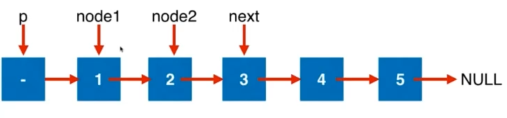
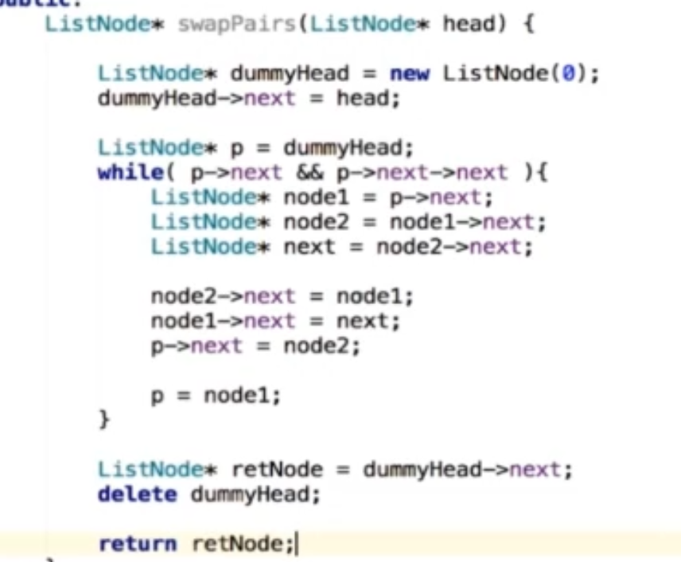
我改成Python版本：
# Definition for singly-linked list.
# class ListNode:
# def __init__(self, val=0, next=None):
# self.val = val
# self.next = next
class Solution:
def swapPairs(self, head: ListNode) -> ListNode:
dummyHead=ListNode()
dummyHead.next=head
p=dummyHead
#保证存在两个将要交换位置的元素
while p.next and p.next.next:
node1=p.next
node2=node1.next
next=node2.next
#开始交换
p.next=node2
node2.next=node1
node1.next=next
#走
p=node1
return dummyHead.next课后习题

参考官方代码+小改动，具体理解结合官方图解就很清晰了：
# Definition for singly-linked list.
# class ListNode:
# def __init__(self, val=0, next=None):
# self.val = val
# self.next = next
class Solution:
def reverseKGroup(self, head: ListNode, k: int) -> ListNode:
#翻转一个子链表，并且返回新的头与尾
def reverseList(sub_head,sub_tail):
pre=None
cur=sub_head
#在普通的反转链表中，这里的判断条件是cur不为None
#但这里，对于完整的链表，只反转sub_head到sub_tail之间的节点
#所以判断条件成了pre!=tail
#当然，也可以先保存tail的后继，然后就和之前普通的俩表反转方法一致了，如下：
#sub_tail_nex=sub_tail.next
#while cur!=sub_tail_nex:
while pre!=tail:
next=cur.next
cur.next=pre
pre=cur
cur=next
return sub_tail,sub_head#tail成了头，head成了尾，是谓“链表反转”
dummyHead=ListNode()
dummyHead.next=head
pre=dummyHead
while head:
tail=pre
# 查看剩余部分长度是否大于等于 k
for i in range(k):
tail = tail.next
if not tail:
return dummyHead.next
nex = tail.next
head, tail = reverseList(head, tail)
# 把子链表重新接回原链表
pre.next = head
tail.next = nex
#为下一次操作做准备
pre = tail
head = tail.next
return dummyHead.next
看官方题解：
对于单向链表而言，只有指向后一个节点的指针，因此需要从链表的头节点开始往后遍历链表中的节点，寻找插入位置。
class Solution:
def insertionSortList(self, head: ListNode) -> ListNode:
if not head:
return head
dummyHead = ListNode(0)
dummyHead.next = head
lastSorted = head
curr = head.next
while curr:
if lastSorted.val <= curr.val:
lastSorted = lastSorted.next
else:
prev = dummyHead
while prev.next.val <= curr.val:
prev = prev.next
lastSorted.next = curr.next
curr.next = prev.next
prev.next = curr
curr = lastSorted.next
return dummyHead.next
暂时不想看。
我改成Python版本：
# Definition for singly-linked list.
# class ListNode:
# def __init__(self, x):
# self.val = x
# self.next = None
class Solution:
def deleteNode(self, node):
"""
:type node: ListNode
:rtype: void Do not return anything, modify node in-place instead.
"""
if not node:
return
if not node.next:
node=None
return
node.val=node.next.val
node.next=node.next.next
我写的解法1：
# Definition for singly-linked list.
# class ListNode:
# def __init__(self, val=0, next=None):
# self.val = val
# self.next = next
class Solution:
def removeNthFromEnd(self, head: ListNode, n: int) -> ListNode:
p=head
length=0#链表长度
while p:
length+=1
p=p.next
dummyHead=ListNode()
dummyHead.next=head
pre=dummyHead#待删除结点的前驱
for i in range(length-n):
pre=pre.next
pre.next=pre.next.next
return dummyHead.next进阶：你能尝试使用一趟扫描实现吗？
我根据题解写的代码：
# Definition for singly-linked list.
# class ListNode:
# def __init__(self, val=0, next=None):
# self.val = val
# self.next = next
class Solution:
def removeNthFromEnd(self, head: ListNode, n: int) -> ListNode:
dummyHead=ListNode()
dummyHead.next=head
fast=head
slow=dummyHead
#fast先行2步
for i in range(n):
fast=fast.next
while fast:
fast=fast.next
slow=slow.next
#此时slow指向待删除结点的前驱
slow.next=slow.next.next
return dummyHead.next课后习题
本想用上一题的方法，但发现本题的k可能大于链表长度，因此不可行，代码如下：
# Definition for singly-linked list.
# class ListNode:
# def __init__(self, val=0, next=None):
# self.val = val
# self.next = next
class Solution:
def rotateRight(self, head: Optional[ListNode], k: int) -> Optional[ListNode]:
if k==0:
return head
if not head:
return head
#切成两段，前面一段，后面k个一段
#然后将前面一段连接在k个一段的后面
#因此需要先找到倒数第k个结点的前驱
dummyHead=ListNode()
dummyHead.next=head
slow=dummyHead
fast=head
for i in range(k):
fast=fast.next
while fast:
fast=fast.next
slow=slow.next
#此时slow指向后一段的前驱
part2Head=slow.next
slow.next=None#切断
#找到后一段的尾巴结点
p=part2Head
while p.next:
p=p.next
p.next=dummyHead.next#连起来
return part2Head可以修改一下，k=length(head)%k
AC代码如下：
# Definition for singly-linked list.
# class ListNode:
# def __init__(self, val=0, next=None):
# self.val = val
# self.next = next
class Solution:
def rotateRight(self, head: Optional[ListNode], k: int) -> Optional[ListNode]:
if k==0 :
return head
if not head:
return head
#求链表长度
length=0
q=head
while q:
length+=1
q=q.next
if length==1:
return head
#k可能大于length，
k=k%length
#切成两段，前面一段，后面k个一段
#然后将前面一段连接在k个一段的后面
#因此需要先找到倒数第k个结点的前驱
dummyHead=ListNode()
dummyHead.next=head
slow=dummyHead
fast=head
for i in range(k):
fast=fast.next
while fast:
fast=fast.next
slow=slow.next
#此时slow指向后一段的前驱
part2Head=slow.next
slow.next=None#切断
#找到后一段的尾巴结点
p=part2Head
#p为空，说明第二段为空，因此不需要做任何操作
if not p:
return head
while p.next:
p=p.next
p.next=dummyHead.next#连起来
return part2Head
不能只是单纯的改变节点内部的值，而是需要实际的进行节点交换。
我自己的解法，按部就班来，官方也是这么做的：
# Definition for singly-linked list.
# class ListNode:
# def __init__(self, val=0, next=None):
# self.val = val
# self.next = next
class Solution:
def reorderList(self, head: ListNode) -> None:
"""
Do not return anything, modify head in-place instead.
"""
if not head or not head.next:
return head
#1. 先找到链表的中间结点
slow=head
fast=head.next
while fast and fast.next:
fast=fast.next.next
slow=slow.next
#2. 中点前后切成两段子链表
part2Head=slow.next
slow.next=None
#3. 将第二段链表反转
p=part2Head
def reverseList(head):
pre=None
cur=head
while cur:
next=cur.next
cur.next=pre
pre=cur
cur=next
return pre
part2Head=reverseList(p)
#4. 开一个新的结点，每一次分别从两个子链表中摘取第一个结点
newHead=ListNode()
p=newHead
#奇数个结点时，第一段会多剩一个结点，直接连过去就好了
while head or part2Head:
if head:
p.next=head
head=head.next
p=p.next
if part2Head:
p.next=part2Head
part2Head=part2Head.next
p=p.next
return newHead.next此外 ，官方还提供了一种做法，不过此时需要开一个列表存储每一个结点，空间复杂度为O(n)：
class Solution:
def reorderList(self, head: ListNode) -> None:
if not head:
return
vec = list()
node = head
while node:
vec.append(node)
node = node.next
i, j = 0, len(vec) - 1
while i < j:
vec[i].next = vec[j]
i += 1
if i == j:
break
vec[j].next = vec[i]
j -= 1
vec[i].next = None
进阶：你能否用 O(n) 时间复杂度和 O(1) 空间复杂度解决此题？
能啊，和上题几乎一样，我直接写(在上一题的代码上复制+修改)出来了：
# Definition for singly-linked list.
# class ListNode:
# def __init__(self, val=0, next=None):
# self.val = val
# self.next = next
class Solution:
def isPalindrome(self, head: ListNode) -> bool:
if not head or not head.next:
return True
#1. 找到中间结点
slow=head
fast=head.next
while fast and fast.next:
fast=fast.next.next
slow=slow.next
#2. 以中间结点为切分点，将整个链表切分成两段
part2Head=slow.next
slow.next=None
#3. 对后一段链表进行反转
p=part2Head
def reverseList(head):
pre=None
cur=head
while cur:
next=cur.next
cur.next=pre
pre=cur
cur=next
return pre
part2Head=reverseList(p)
#4. 两段链表逐个元素比较
#即使结点个数为奇数也没关系，用and，忽略剩余的一个元素即可
while head and part2Head:
if head.val!=part2Head.val:
return False
head=head.next
part2Head=part2Head.next
return True比较直接的，但空间复杂度为O(n)的做法，是将值存入列表，然后判断lis等不等于lis[::-1]：
class Solution:
def isPalindrome(self, head: ListNode) -> bool:
vals = []
current_node = head
while current_node is not None:
vals.append(current_node.val)
current_node = current_node.next
return vals == vals[::-1]我根据视频解法写的Python版本：
class Solution:
def isValid(self, s: str) -> bool:
stack=[]
for ch in s:
if ch in '({[':
stack.append(ch)
#ch in ')]}'
else:
if ch ==')':
match='('
elif ch=='}':
match='{'
elif ch==']':
match='['
#比如'{{}'
if len(stack)==0:
return False
cur=stack.pop()
if cur!=match:
return False
if len(stack)!=0:
return False
return True 时间复杂度：O(n)，其中 n 是字符串 s 的长度。
空间复杂度：O(n+∣Σ∣)其中 Σ\SigmaΣ 表示字符集，本题中字符串只包含 6 种括号，∣Σ∣=6|。栈中的字符数量为 O(n),而哈希表使用的空间为 O(∣Σ∣)，相加即可得到总空间复杂度。
课后习题
我的解法：
遇到数字就入栈，否则遇到操作数弹出两个元素，执行运损，再把结果入栈。
class Solution:
def evalRPN(self, tokens: List[str]) -> int:
stack=[]
for ch in tokens:
#是数字，则入栈
if ch not in '+-*/':
stack.append(int(ch))
#是运算符，则取出栈中前两个数字，执行操作，再把操作结果压入栈中
else:
a=stack.pop()
b=stack.pop()
if ch=='+':
res=a+b
elif ch=='-':
res=b-a
elif ch=='*':
res=a*b
elif ch=='/':
res=int(b/a)#注意Python遇到负数除法时会跟题目不一致，因此这里不能直接用b//a
stack.append(res)
return stack.pop()示例：
示例 1：
输入：path = "/home/"
输出："/home"
解释：注意，最后一个目录名后面没有斜杠。
示例 2：
输入：path = "/../"
输出："/"
解释：从根目录向上一级是不可行的，因为根目录是你可以到达的最高级。
示例 3：
输入：path = "/home//foo/"
输出："/home/foo"
解释：在规范路径中，多个连续斜杠需要用一个斜杠替换。
示例 4：
输入：path = "/a/./b/../../c/"
输出："/c"评论区答案：
class Solution:
def simplifyPath(self, path):
stack = []
all_chs=path.split('/')
for p in all_chs:
if stack and p == '..':
stack.pop()
elif p not in " ..":
stack.append(p)
return '/' + '/'.join(stack)split妙啊~~
栈与递归。
以二叉树的遍历为例：
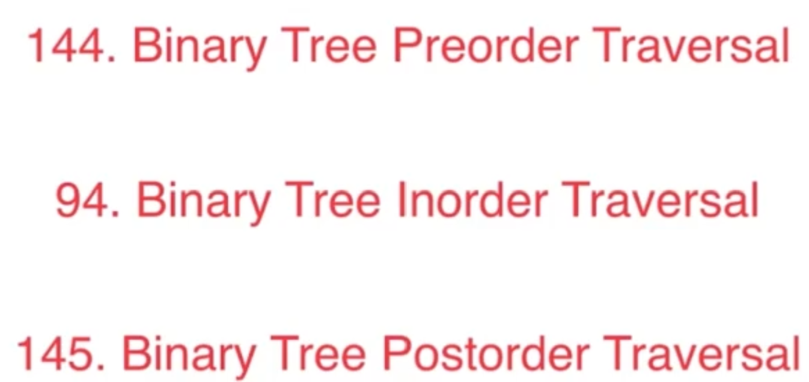
递归需要系统栈。
可以手动栈代替系统栈，将递归转为非递归。
非递归实现二叉树遍历。
用栈。
1. 前序遍历
递归：
# Definition for a binary tree node.
# class TreeNode:
# def __init__(self, val=0, left=None, right=None):
# self.val = val
# self.left = left
# self.right = right
class Solution:
def preorderTraversal(self, root: TreeNode) -> List[int]:
res=[]
def f(root):
if root:
res.append(root.val)
f(root.left)
f(root.right)
f(root)
return res时间复杂度：O(n)，其中 n 是二叉树的节点数。每一个节点恰好被遍历一次。
空间复杂度：O(n)，为递归过程中栈的开销，平均情况下为 O(logn)，最坏情况下树呈现链状，为 O(n)。
非递归：
# Definition for a binary tree node.
# class TreeNode:
# def __init__(self, val=0, left=None, right=None):
# self.val = val
# self.left = left
# self.right = right
class Solution:
def preorderTraversal(self, root: TreeNode) -> List[int]:
if not root:
return []
stack=[root]
res=[]
while stack:
node=stack.pop()
if node:
res.append(node.val)
if node.right:
stack.append(node.right)
if node.left:
stack.append(node.left)
return res非递归解法2：模板解法
# Definition for a binary tree node.
# class TreeNode:
# def __init__(self, val=0, left=None, right=None):
# self.val = val
# self.left = left
# self.right = right
class Solution:
def preorderTraversal(self, root: TreeNode) -> List[int]:
res=[]
stack=[]
while root:
res.append(root.val)
stack.append(root)
root=root.left
while stack:
t=stack.pop()
r=t.right
while r:
res.append(r.val)
stack.append(r)
r=r.left
return res2. 中序遍历
递归：
# Definition for a binary tree node.
# class TreeNode:
# def __init__(self, val=0, left=None, right=None):
# self.val = val
# self.left = left
# self.right = right
class Solution:
def inorderTraversal(self, root: TreeNode) -> List[int]:
res=[]
def f(root):
if root:
f(root.left)
res.append(root.val)
f(root.right)
f(root)
return res非递归 模板解法：
前序遍历中，入栈前就访问元素
中序遍历中，出栈时才访问元素
# Definition for a binary tree node.
# class TreeNode:
# def __init__(self, val=0, left=None, right=None):
# self.val = val
# self.left = left
# self.right = right
class Solution:
def inorderTraversal(self, root: TreeNode) -> List[int]:
res=[]
stack=[]
while root:
stack.append(root)
root=root.left
while stack:
t=stack.pop()
res.append(t.val)#访问
r=t.right
while r:
stack.append(r)
r=r.left
return res3. 后序遍历
递归：
# Definition for a binary tree node.
# class TreeNode:
# def __init__(self, val=0, left=None, right=None):
# self.val = val
# self.left = left
# self.right = right
class Solution:
def postorderTraversal(self, root: TreeNode) -> List[int]:
res=[]
def f(root):
if root:
f(root.left)
f(root.right)
res.append(root.val)
f(root)
return res非递归 模板解法：
前序遍历：根 左 右
后序遍历：左 右 根
后序遍历的逆序：根 右 左
因此，可以直接拿前序遍历的代码，改一下左右子树的访问顺序即可，最后返回结果的逆序，就是后序遍历的结果啦：
# Definition for a binary tree node.
# class TreeNode:
# def __init__(self, val=0, left=None, right=None):
# self.val = val
# self.left = left
# self.right = right
class Solution:
def postorderTraversal(self, root: TreeNode) -> List[int]:
res=[]
stack=[]
while root:
res.append(root.val)#访问
stack.append(root)
root=root.right
while stack:
t=stack.pop()
r=t.left
while r:
res.append(r.val)#访问
stack.append(r)
r=r.right
return res[::-1]总结：前序和中序的区别就在于前者是入栈时访问，而后者是出栈时才访问；后序可借助前序得到，只需更改一下左右结点入栈顺序。
课后习题

递归：
class NestedIterator(object):
def dfs(self, nests):
for nest in nests:
if nest.isInteger():
self.queue.append(nest.getInteger())
else:
self.dfs(nest.getList())
def __init__(self, nestedList):
self.queue = collections.deque()
self.dfs(nestedList)
def next(self):
return self.queue.popleft()
def hasNext(self):
return len(self.queue)非递归：栈
在递归方法中，我们在遍历时如果遇到一个嵌套的 子list，就立即处理该 子list，直到全部展开；
在迭代方法中，我们不需要全部展开，只需要把 当前list 的所有元素放入 list 中。
算法整体的流程，通过举例说明。假如输入 [1, [2,3]] 。
1. 在构造函数中：栈里面放的应该是 stack = [[2, 3], 1]
2. 在调用 hasNext() 方法时，访问栈顶元素是 1，为 int，那么直接返回 true;
3. 然后调用 next() 方法，弹出栈顶元素 1；
4. 再调用 hasNext() 方法时，访问栈顶元素是 [2,3]，为 list，那么需要摊平，继续放到栈中。
当前的栈是 stack = [3, 2]
5. 然后调用 next() 方法，弹出栈顶元素 2；
6. 然后调用 next() 方法，弹出栈顶元素 3；
7. 再调用 hasNext() 方法时，栈为空，因此返回 false，迭代器运行结束。代码：
# """
# This is the interface that allows for creating nested lists.
# You should not implement it, or speculate about its implementation
# """
#class NestedInteger:
# def isInteger(self) -> bool:
# """
# @return True if this NestedInteger holds a single integer, rather than a nested list.
# """
#
# def getInteger(self) -> int:
# """
# @return the single integer that this NestedInteger holds, if it holds a single integer
# Return None if this NestedInteger holds a nested list
# """
#
# def getList(self) -> [NestedInteger]:
# """
# @return the nested list that this NestedInteger holds, if it holds a nested list
# Return None if this NestedInteger holds a single integer
# """
class NestedIterator(object):
def __init__(self, nestedList):
self.stack = []
for i in range(len(nestedList) - 1, -1, -1):
self.stack.append(nestedList[i])
def next(self):
cur = self.stack.pop()
return cur.getInteger()
def hasNext(self):
while self.stack:
cur = self.stack[-1]
if cur.isInteger():
return True
self.stack.pop()
for i in range(len(cur.getList()) - 1, -1, -1):
self.stack.append(cur.getList()[i])
return False
# Your NestedIterator object will be instantiated and called as such:
# i, v = NestedIterator(nestedList), []
# while i.hasNext(): v.append(i.next())队列。
树的BFS。

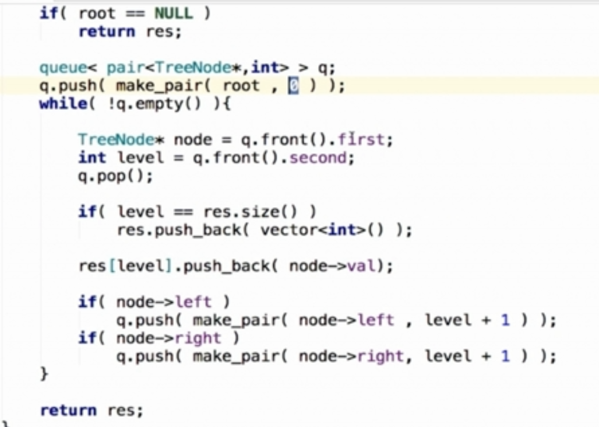
可以DFS也可以BFS，这里用BFS，借助队列先进先出的特性。
评论区答案：
# Definition for a binary tree node.
# class TreeNode:
# def __init__(self, val=0, left=None, right=None):
# self.val = val
# self.left = left
# self.right = right
class Solution(object):
def levelOrder(self, root):
"""
:type root: TreeNode
:rtype: List[List[int]]
"""
if not root:
return []
res = []
queue = [root]
while queue:
# 获取当前队列的长度，这个长度相当于 当前这一层的节点个数
size = len(queue)
tmp = []
# 将队列中的元素都拿出来(也就是获取这一层的节点)，放到临时list中
# 如果节点的左/右子树不为空，也放入队列中
for _ in range(size):
r = queue.pop(0)
tmp.append(r.val)
if r.left:
queue.append(r.left)
if r.right:
queue.append(r.right)
# 将临时list加入最终返回结果中
res.append(tmp)
return res时间复杂度： O(n)
空间复杂度：O(n)
这类题有模板，请牢记：

由于需要level，因此这里需要使用模板2：
# Definition for a binary tree node.
# class TreeNode:
# def __init__(self, val=0, left=None, right=None):
# self.val = val
# self.left = left
# self.right = right
# Definition for a binary tree node.
# class TreeNode(object):
# def __init__(self, x):
# self.val = x
# self.left = None
# self.right = None
class Solution(object):
def levelOrder(self, root):
"""
:type root: TreeNode
:rtype: List[List[int]]
"""
queue = collections.deque()
queue.append(root)
res = []
while queue:
size = len(queue)
level = []
for _ in range(size):
cur = queue.popleft()
#不能删！！因为加入的可能是None，也就是左or右孩子为空也加入了
#还有，也处理了本身root就是空的情况
if not cur:
continue
level.append(cur.val)
queue.append(cur.left)
queue.append(cur.right)
if level:
res.append(level)
return res如果想和上一个代码统一，可以改：
# Definition for a binary tree node.
# class TreeNode:
# def __init__(self, val=0, left=None, right=None):
# self.val = val
# self.left = left
# self.right = right
# Definition for a binary tree node.
# class TreeNode(object):
# def __init__(self, x):
# self.val = x
# self.left = None
# self.right = None
class Solution(object):
def levelOrder(self, root):
"""
:type root: TreeNode
:rtype: List[List[int]]
"""
if not root:
return []
queue = collections.deque()
queue.append(root)
res = []
while queue:
size = len(queue)
level = []
for _ in range(size):
cur = queue.popleft()
level.append(cur.val)
if cur.left:
queue.append(cur.left)
if cur.right:
queue.append(cur.right)
if level:
res.append(level)
return res只是把list换成了deque，别的代码是一样的。
DFS解法暂时不看了。
课后习题
直接再上题的基础上，最后逆序返回res，即res[::-1]就好了：
# Definition for a binary tree node.
# class TreeNode:
# def __init__(self, val=0, left=None, right=None):
# self.val = val
# self.left = left
# self.right = right
class Solution:
def levelOrderBottom(self, root: TreeNode) -> List[List[int]]:
if not root:
return []
queue = collections.deque()
queue.append(root)
res = []
while queue:
size = len(queue)
level = []
for _ in range(size):
cur = queue.popleft()
level.append(cur.val)
if cur.left:
queue.append(cur.left)
if cur.right:
queue.append(cur.right)
if level:
res.append(level)
return res[::-1]
还是基于之前的代码，将根节点所在层视为第0层，判断当前层是奇数层还是偶数层，偶数层则从左往右，奇数层则从右往左。
# Definition for a binary tree node.
# class TreeNode:
# def __init__(self, val=0, left=None, right=None):
# self.val = val
# self.left = left
# self.right = right
class Solution:
def zigzagLevelOrder(self, root: TreeNode) -> List[List[int]]:
if not root:
return []
queue = collections.deque()
queue.append(root)
res = []
cnt=0#层的奇偶，偶数：从左往右；奇数：从右往左(逆序即可)，根节点所在层为第0层
while queue:
size = len(queue)
level = []
for _ in range(size):
cur=queue.popleft()
level.append(cur.val)
if cur.left:
queue.append(cur.left)
if cur.right:
queue.append(cur.right)
if level:
if cnt%2==0:
res.append(level)
else:
res.append(level[::-1])
cnt+=1
return res
层序遍历，还是基于上述代码，只需要获取每一层的最一个结点值就好了(我怎么一开始就没想到。。。)
# Definition for a binary tree node.
# class TreeNode:
# def __init__(self, val=0, left=None, right=None):
# self.val = val
# self.left = left
# self.right = right
class Solution:
def rightSideView(self, root: TreeNode) -> List[int]:
if not root:
return []
queue = collections.deque()
queue.append(root)
res = []
while queue:
size = len(queue)
level = []
for _ in range(size):
cur = queue.popleft()
level.append(cur.val)
if cur.left:
queue.append(cur.left)
if cur.right:
queue.append(cur.right)
if level:
res.append(level[-1])
return res队列。
(无权)图的BFS。


评论区Python版本：
class Solution:
def numSquares(self, n: int) -> int:
from collections import deque
deq=deque()
visited=set()
deq.append((n,0))
while deq:
number,step=deq.popleft()
targets=[number-i*i for i in range(1,int(number**0.5)+1)]
for target in targets:
#由于只遍历到(number**0.5)，因此target不可能为负数，因此下面这个判断可省略
#if target<0:
# break
if target==0:return step+1
#这个if相当于剪枝
if target not in visited:
deq.append((target,step+1))
visited.add(target)图示很清楚了：
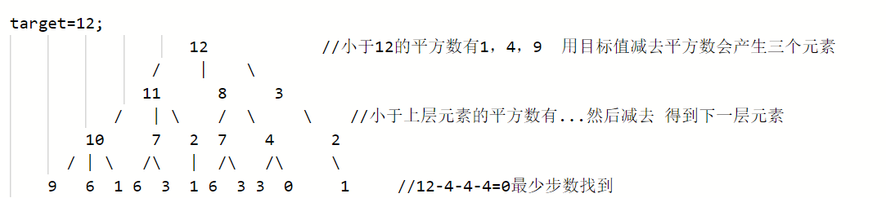
看代码勉强看得懂，自己还真想不到，还得多练啊！
Note：
对于无权图->可以BFS，就像本题
对于有权图->迪杰斯塔拉，遇到再说吧
课后习题


不想做，都是困难题。。。
优先队列：底层是堆
用优先队列解题：
评论区Python版本，使用heapq库，维护一个长度为k的小根堆：
#时间复杂度：O(nlogk)
#空间复杂度：O(n)
import heapq
class Solution:
def topKFrequent(self,nums, k):
#要统计元素出现频率
map_ = {} #nums[i]:对应出现的次数
for i in range(len(nums)):
map_[nums[i]] = map_.get(nums[i], 0) + 1
print(map_)
#对频率排序
#定义一个小顶堆，大小为k
pri_que = [] #小顶堆
#用固定大小为k的小顶堆，扫描所有频率的数值
for key, freq in map_.items():
heapq.heappush(pri_que, (freq, key))
if len(pri_que) > k: #如果堆的大小大于了K，则队列弹出，保证堆的大小一直为k
heapq.heappop(pri_que)#出现次数最少的出队(优先级最高~~)
#找出前K个高频元素，因为小顶堆先弹出的是最小的，所以倒叙来输出到数组#用不到额
result = []
for i in range(k-1, -1, -1):
result.append( heapq.heappop(pri_que)[1])
return result
课后习题

评论区Python使用优先队列的解法，赞！
# Definition for singly-linked list.
# class ListNode:
# def __init__(self, val=0, next=None):
# self.val = val
# self.next = next
class Solution:
def mergeKLists(self, lists: List[ListNode]) -> ListNode:
if len(lists)==0: return None
if len(lists)==1: return lists[0]
head=ListNode()
h = head
que = []
# 初始化que
for i in range(len(lists)):
if lists[i]:
heapq.heappush(que, (lists[i].val,i))
# 逐次弹出最小的 加入新元素
while que :
# 加入最小的
val_min, ind_min = heapq.heappop(que)
h.next = ListNode(val_min)
h=h.next
# 被添加元素所在链表后移
lists[ind_min] = lists[ind_min].next
#若被添加元素所在链表还不为空，就继续把它的剩余部分加入优先队列
if lists[ind_min]:
heapq.heappush(que, (lists[ind_min].val, ind_min))
return head.next还有一种同时可以应对无序场景，此时将全部元素加入优先队列：
# Definition for singly-linked list.
# class ListNode:
# def __init__(self, x):
# self.val = x
# self.next = None
class Solution:
def mergeKLists(self, lists: List[ListNode]) -> ListNode:
if not lists or len(lists) == 0:
return None
import heapq
heap = []
# 首先 for 嵌套 while 就是将所有元素都取出放入堆中
for node in lists:
while node:
heapq.heappush(heap, node.val)
node = node.next
dummy = ListNode(None)
cur = dummy
# 依次将堆中的元素取出(因为是小顶堆，所以每次出来的都是目前堆中值最小的元素），然后重新构建一个列表返回
while heap:
temp_node = ListNode(heappop(heap))
cur.next = temp_node
cur = temp_node
return dummy.next还有一种暴力法，直接去除全部元素，排序，加入链表：
# Definition for singly-linked list.
# class ListNode:
# def __init__(self, val=0, next=None):
# self.val = val
# self.next = next
# Definition for singly-linked list.
# class ListNode:
# def __init__(self, x):
# self.val = x
# self.next = None
class Solution:
def mergeKLists(self, lists: List[ListNode]) -> ListNode:
if not lists or len(lists) == 0:
return None
import heapq
all_vals = []
for l in lists:
while l:
all_vals.append(l.val)
l = l.next
all_vals.sort()
dummy = ListNode(None)
cur = dummy
for i in all_vals:
temp_node = ListNode(i)
cur.next = temp_node
cur = temp_node
return dummy.next

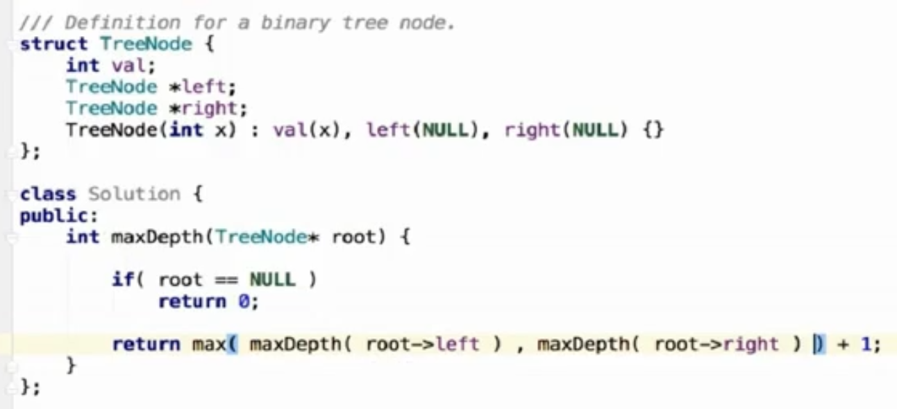
Python版本：
# Definition for a binary tree node.
# class TreeNode:
# def __init__(self, val=0, left=None, right=None):
# self.val = val
# self.left = left
# self.right = right
class Solution:
def maxDepth(self, root: TreeNode) -> int:
if root is None:
return 0
left_maxdepth=self.maxDepth(root.left)
right_maxdepth=self.maxDepth(root.right)
return 1+max(left_maxdepth,right_maxdepth)时间复杂度：O(n)，其中 n 为二叉树节点的个数。每个节点在递归中只被遍历一次。
空间复杂度：O(height)，其中 height 表示二叉树的高度。递归函数需要栈空间，而栈空间取决于递归的深度，因此空间复杂度等价于二叉树的高度。
也可以用BFS，直接统计最大深度.
我根据之前的二叉树BFS代码改的：
# Definition for a binary tree node.
# class TreeNode:
# def __init__(self, val=0, left=None, right=None):
# self.val = val
# self.left = left
# self.right = right
class Solution:
def maxDepth(self, root: TreeNode) -> int:
if not root:
return 0
res=0
queue = [root]
while queue:
# 获取当前队列的长度，这个长度相当于 当前这一层的节点个数
size = len(queue)
# 如果节点的左/右子树不为空，也放入队列中
for _ in range(size):
r = queue.pop(0)
if r.left:
queue.append(r.left)
if r.right:
queue.append(r.right)
res+=1
return res时间复杂度：O(N)，其中 N 是树的节点数。对每个节点访问一次。
空间复杂度：O(N)，其中 N 是树的节点数。空间复杂度主要取决于队列的开销，队列中的元素个数不会超过树的节点数。
课后习题
我的解法：
在上一题中，求的是根结点到叶子节点的最大深度，如果根结点有一个子树为空，那么改子树的最大深度是0，是最小的，此时结果就依赖于另外一个非空子树的最大深度，该深度肯定大于0的。
而这里求的是根结点到叶子最小的深度，此时如果根结点的某一个子树为空，那么如果和上题代码一样，只是把max改成min，那么为空的子树得到的结果是0，但非空的子树是有叶子结点的，此时用min的话就错误的以为是空子树得到的0了，然而非空子树的对应结果才是正确的。
因此需要改一下代码，判断左右子树是否为空，3种情况分别对症下药：
# Definition for a binary tree node.
# class TreeNode:
# def __init__(self, val=0, left=None, right=None):
# self.val = val
# self.left = left
# self.right = right
class Solution:
def minDepth(self, root: TreeNode) -> int:
if root is None:
return 0
if root.left and root.right:
left_mindepth=self.minDepth(root.left)
right_min_depth=self.minDepth(root.right)
return 1+min(left_mindepth,right_min_depth)
elif not root.left:
return 1+self.minDepth(root.right)
elif not root.right:
return 1+self.minDepth(root.left)评论区还有BFS的方案：利用BFS实现二叉树的层序遍历，第一个遇到的叶子结点就是树的最小深度。
我根据之前的二叉树BFS代码改的：
# Definition for a binary tree node.
# class TreeNode:
# def __init__(self, val=0, left=None, right=None):
# self.val = val
# self.left = left
# self.right = right
class Solution:
def minDepth(self, root: TreeNode) -> int:
if not root:
return 0
res=0
queue = [root]
while queue:
# 获取当前队列的长度，这个长度相当于 当前这一层的节点个数
size = len(queue)
# 如果节点的左/右子树不为空，也放入队列中
for _ in range(size):
r = queue.pop(0)
#第一个访问到的叶子结点所在层数就是答案~
if not r.left and not r.right:
return res+1
if r.left:
queue.append(r.left)
if r.right:
queue.append(r.right)
res+=1

我改成Python版本：
# Definition for a binary tree node.
# class TreeNode:
# def __init__(self, val=0, left=None, right=None):
# self.val = val
# self.left = left
# self.right = right
class Solution:
def invertTree(self, root: TreeNode) -> TreeNode:
if not root:
return
self.invertTree(root.left)
self.invertTree(root.right)
root.left,root.right=root.right,root.left
return root或者多加一句判断，但我不知道这是否多余，不知道能不能起到什么作用：
# Definition for a binary tree node.
# class TreeNode:
# def __init__(self, val=0, left=None, right=None):
# self.val = val
# self.left = left
# self.right = right
class Solution:
def invertTree(self, root: TreeNode) -> TreeNode:
if not root :
return
#emm，这句是否多余呢？
if not root.left and not root.right:
return root
self.invertTree(root.left)
self.invertTree(root.right)
root.left,root.right=root.right,root.left
return root时间复杂度：O(N)，其中 N 为二叉树节点的数目。我们会遍历二叉树中的每一个节点，对每个节点而言，我们在常数时间内交换其两棵子树。
空间复杂度：O(N)。使用的空间由递归栈的深度决定，它等于当前节点在二叉树中的高度。在平均情况下，二叉树的高度与节点个数为对数关系，即 O(logN)。而在最坏情况下，树形成链状，空间复杂度为 O(N)。
也可以用二叉树的BFS：
# Definition for a binary tree node.
# class TreeNode:
# def __init__(self, val=0, left=None, right=None):
# self.val = val
# self.left = left
# self.right = right
class Solution:
def invertTree(self, root: TreeNode) -> TreeNode:
if not root:
#以下两种写法都可以
#return
return root
queue = [root]
while queue:
# 获取当前队列的长度，这个长度相当于 当前这一层的节点个数
size = len(queue)
# 如果节点的左/右子树不为空，也放入队列中
for _ in range(size):
r = queue.pop(0)
r.left,r.right=r.right,r.left#swap
if r.left:
queue.append(r.left)
if r.right:
queue.append(r.right)
return root课后习题
如果两个树在结构上相同，并且节点具有相同的值，则认为它们是相同的。
DFS：
# Definition for a binary tree node.
# class TreeNode:
# def __init__(self, val=0, left=None, right=None):
# self.val = val
# self.left = left
# self.right = right
class Solution:
def isSameTree(self, p: TreeNode, q: TreeNode) -> bool:
if (not p) and (not q):#全空
return True
elif (not p) or (not q):#只有一个为空
return False
#都不为空
elif p.val !=q.val:
return False
else:
return self.isSameTree(p.left,q.left) and self.isSameTree(p.right,q.right)我写的BFS：
# Definition for a binary tree node.
# class TreeNode:
# def __init__(self, val=0, left=None, right=None):
# self.val = val
# self.left = left
# self.right = right
class Solution:
def isSameTree(self, p: TreeNode, q: TreeNode) -> bool:
#都为空-->相同
if not p and not q:
return True
#只有一个为空-->不相同
elif not p or not q:
return False
#用两个队列分别存储两棵树的BFS结果
queue1 = [p]
queue2=[q]
while queue1 and queue2:# 用and 或 or都可以，只写while queue1或者while queue2也可以~
# 获取当前队列的长度，这个长度相当于 当前这一层的节点个数
size1 = len(queue1)
size2 = len(queue2)
#同一层的结点个数不同-->不相同
if size1!=size2:
return False
for _ in range(size1):
r1 = queue1.pop(0)
r2=queue2.pop(0)
#只有一个为空-->不相同
if (r1 is None and r2 is not None) or (r2 is None and r1 is not None):
return False
#都为空-->当前结点相同，继续出队下一个结点做判断
if not r1 and not r2:
continue
#都不为空-->结构相同，则比较值
if r1 and r2 and (r1.val!=r2.val):
return False
queue1.append(r1.left)
queue1.append(r1.right)
queue2.append(r2.left)
queue2.append(r2.right)
return True官方题解先判断值是都相同，并且没有将None结点入队：
class Solution:
def isSameTree(self, p: TreeNode, q: TreeNode) -> bool:
if not p and not q:
return True
if not p or not q:
return False
queue1 = collections.deque([p])
queue2 = collections.deque([q])
while queue1 and queue2:
node1 = queue1.popleft()
node2 = queue2.popleft()
if node1.val != node2.val:
return False
left1, right1 = node1.left, node1.right
left2, right2 = node2.left, node2.right
if (not left1) ^ (not left2):
return False
if (not right1) ^ (not right2):
return False
if left1:
queue1.append(left1)
if right1:
queue1.append(right1)
if left2:
queue2.append(left2)
if right2:
queue2.append(right2)
return not queue1 and not queue2
DFS:
官方：
# Definition for a binary tree node.
# class TreeNode:
# def __init__(self, val=0, left=None, right=None):
# self.val = val
# self.left = left
# self.right = right
class Solution:
def isSymmetric(self, root: TreeNode) -> bool:
#我自己加了个判断条件，貌似快了跟多
if not root:
return True
def check(p,q):
#树为空-->对称
if not p and not q:
return True
#此时只有左子树或右子树不为空-->不对称
if (not p) or (not q):
return False
return p.val ==q.val and check(p.left,q.right) and check(p.right,q.left)
return check(root,root)评论区BFS解法(tql…)：
# Definition for a binary tree node.
# class TreeNode:
# def __init__(self, val=0, left=None, right=None):
# self.val = val
# self.left = left
# self.right = right
class Solution:
def isSymmetric(self, root):
"""
:type root: TreeNode
:rtype: bool
"""
#空树 or 树只有一个结点而无左右孩子-->对称
if not root or not (root.left or root.right):
return True
# 用队列保存节点
queue = [root.left,root.right]
while queue:
# 从队列中取出两个节点，再比较这两个节点
left = queue.pop(0)
right = queue.pop(0)
# 两个节点都为空-->继续循环，出队新的两个元素
if not (left or right):
continue
# 两者只有一个为空-->不对称
if not (left and right):
return False
# 此时两者都不为空，但值不同-->不对称
if left.val!=right.val:
return False
# 将左节点的左孩子， 右节点的右孩子放入队列
queue.append(left.left)
queue.append(right.right)
# 将左节点的右孩子，右节点的左孩子放入队列
queue.append(left.right)
queue.append(right.left)
return True
DFS:
我写了一半多吧，最后忘了写递归判断左右子树，于是参考了下题解
# Definition for a binary tree node.
# class TreeNode:
# def __init__(self, val=0, left=None, right=None):
# self.val = val
# self.left = left
# self.right = right
class Solution:
def isBalanced(self, root: TreeNode) -> bool:
#空树-->是平衡二叉树
if not root:
return True
def cal_depth(p):
if not p:
return 0
return 1+max(cal_depth(p.left),cal_depth(p.right))
left_depth=cal_depth(root.left)
right_depth=cal_depth(root.right)
if abs(left_depth-right_depth)>1:
return False
return self.isBalanced(root.left) and self.isBalanced(root.right)
思路是构造一个获取当前节点最大深度的方法 depth(root) ，通过比较此子树的左右子树的最大高度差abs(depth(root.left) - depth(root.right))，来判断此子树是否是二叉平衡树。若树的所有子树都平衡时，此树才平衡。
从官方那里了解到，这种方法叫做自顶向下的递归:
类似于二叉树的前序遍历，即对于当前遍历到的节点，首先计算左右子树的高度，如果左右子树的高度差是否不超过 1，再分别递归地遍历左右子节点，并判断左子树和右子树是否平衡。这是一个自顶向下的递归的过程。
既然有自顶向下的递归，那就有自底向上的递归：
自顶向下递归，对于同一个节点，函数 cal_depth会被重复调用，导致时间复杂度较高。如果使用自底向上的做法，则对于每个节点，函数 cal_depth只会被调用一次。
具体的思路是对二叉树做后序遍历，从底至顶返回子树最大高度，若判定某子树不是平衡树则 “剪枝” ，直接向上返回。
大佬的代码：
# Definition for a binary tree node.
# class TreeNode:
# def __init__(self, val=0, left=None, right=None):
# self.val = val
# self.left = left
# self.right = right
class Solution:
def isBalanced(self, root: TreeNode) -> bool:
return self.recur(root) != -1
def recur(self, root):
if not root:
return 0
#左子树深度
left = self.recur(root.left)
if left == -1:
return -1
#右子树深度
right = self.recur(root.right)
if right == -1:
return -1
return max(left, right) + 1 if abs(left - right) < 2 else -1这题我上来就是：
# Definition for a binary tree node.
# class TreeNode:
# def __init__(self, val=0, left=None, right=None):
# self.val = val
# self.left = left
# self.right = right
class Solution:
def countNodes(self, root: TreeNode) -> int:
if not root:
return 0
return 1+self.countNodes(root.left)+self.countNodes(root.right)此时的时间/空间复杂度都是O(n).
如何优化呢？
题目中的树是完全二叉树，所以可以利用完全二叉树的性质来优化时间复杂度。

可以看出如果整个树不是满二叉树，就递归其左右孩子，直到遇到满二叉树为止，用公式计算这个子树（满二叉树）的节点数量。
大佬的代码：
# Definition for a binary tree node.
# class TreeNode:
# def __init__(self, val=0, left=None, right=None):
# self.val = val
# self.left = left
# self.right = right
class Solution:
#利用：根结点的深度为1，满二叉树的结点数公式：2^满二叉树数深度-1
def countNodes(self, root: TreeNode) -> int:
if not root:
return 0
left = root.left
right = root.right
rightHeight = 0
leftHeight=0
#以下求树的深度用到了完全二叉树的性质
while left: #求左子树深度
left = left.left
leftHeight += 1
while right: #求右子树深度
right = right.right
rightHeight += 1
print(leftHeight,rightHeight)
"""
2 1
1 1
1 0
0 0
"""
#如果左右子树的深度相等，则说明以该结点为根的子树是一棵满二叉树
#此时直接用2^树深度-1求解子树结点个数即可
if leftHeight == rightHeight:
print('dd',leftHeight)
return (2**(leftHeight+1)) - 1 #加1是因为这里的height是子树的深度，而我们需要得到有根结点的树的深度，所以深度加1
return self.countNodes(root.left) + self.countNodes(root.right) + 1 时间复杂度：O(logn * logn)，比O(n)快很多~
空间复杂度：O(logn)
我只能膜拜了，大佬太强了~~
注意递归终止条件。


Python版本：
# Definition for a binary tree node.
# class TreeNode:
# def __init__(self, val=0, left=None, right=None):
# self.val = val
# self.left = left
# self.right = right
class Solution:
def hasPathSum(self, root: Optional[TreeNode], targetSum: int) -> bool:
#root为空-->找不到
if not root:
return False
#root是叶子结点-->判断root.val是否等于targetSum
if not root.left and not root.right:
return root.val==targetSum
return self.hasPathSum(root.left,targetSum-root.val) or self.hasPathSum(root.right,targetSum-root.val)评论区BFS解法：
# Definition for a binary tree node.
# class TreeNode:
# def __init__(self, x):
# self.val = x
# self.left = None
# self.right = None
class Solution:
def hasPathSum(self, root: TreeNode, sum: int) -> bool:
if not root:
return False
que = collections.deque()
que.append((root, root.val))
while que:
#结点，结点值(从根结点一路向下累加的值)
node, cusum = que.popleft()
#如果是叶子节点，并且这个叶子结点的值等于sum-->找到啦
if not node.left and not node.right and cusum == sum:
return True
if node.left:
que.append((node.left, cusum + node.left.val))
if node.right:
que.append((node.right, cusum+ node.right.val))
return False上面的队列也可以替换成栈，此时不再是BFS了，因为结点访问顺序变了，但代码一模一样：
# Definition for a binary tree node.
# class TreeNode(object):
# def __init__(self, x):
# self.val = x
# self.left = None
# self.right = None
class Solution(object):
def hasPathSum(self, root, sum):
"""
:type root: TreeNode
:type sum: int
:rtype: bool
"""
if not root:
return False
stack = []
stack.append((root, root.val))
while stack:
node, path = stack.pop()
if not node.left and not node.right and path == sum:
return True
if node.left:
stack.append((node.left, path + node.left.val))
if node.right:
stack.append((node.right, path + node.right.val))
return False还有回溯法，等学完下一章回溯法再来看：
https://leetcode-cn.com/problems/path-sum/solution/lu-jing-zong-he-de-si-chong-jie-fa-dfs-hui-su-bfs-/
课后习题

如果左节点不为空，且左节点没有左右孩子，那么这个节点就是左叶子
我一开始写成了：
def sumOfLeftLeaves(self, root: TreeNode) -> int:
#root为空
if not root:
return 0
leftNode=root.left
#root的左孩子是叶子结点
if leftNode and not leftNode.left and not leftNode.right:
return leftNode.val
return self.sumOfLeftLeaves(root.left)+self.sumOfLeftLeaves(root.right)这是不对的！
当遍历到的root的左孩子是叶子结点时，应该暂时将其保存起来，在最后累计返回
看了大佬的题解后修改的正确代码如下：
# Definition for a binary tree node.
# class TreeNode:
# def __init__(self, val=0, left=None, right=None):
# self.val = val
# self.left = left
# self.right = right
class Solution:
def sumOfLeftLeaves(self, root: TreeNode) -> int:
#root为空
if not root:
return 0
leftNode=root.left
val=0#存储root的左孩子的值，默认leftNode不是左孩子，此时值为0
#如果root的左孩子leftNode是叶子结点，就更新val
if leftNode and not leftNode.left and not leftNode.right:
val=leftNode.val
return val+self.sumOfLeftLeaves(root.left)+self.sumOfLeftLeaves(root.right)或者下面这样写语义更清楚：
class Solution:
def sumOfLeftLeaves(self, root: TreeNode) -> int:
#root为空
if not root:
return 0
leftNode=root.left#root的左孩子
#如果root的左孩子leftNode是叶子结点
if leftNode and not leftNode.left and not leftNode.right:
val=leftNode.val#存储root的左孩子（是个叶子结点）的值
return val+self.sumOfLeftLeaves(root.right)#左孩子已经处理好了，只需递归处理右孩子
else:
return self.sumOfLeftLeaves(root.left)+self.sumOfLeftLeaves(root.right)#递归处理左右孩子有了上面的思考过程，我自己写出了下面的BFS代码：
# Definition for a binary tree node.
# class TreeNode:
# def __init__(self, val=0, left=None, right=None):
# self.val = val
# self.left = left
# self.right = right
class Solution:
def sumOfLeftLeaves(self, root: TreeNode) -> int:
#root为空
if not root:
return 0
res=0
queue=[root]
while queue:
r=queue.pop(0)
leftNode=r.left
#当前访问的结点r的左孩子是叶子结点
if leftNode and not leftNode.left and not leftNode.right:
res+=leftNode.val
if r.left:
queue.append(r.left)
if r.right:
queue.append(r.right)
return res

Python版本：
# Definition for a binary tree node.
# class TreeNode:
# def __init__(self, val=0, left=None, right=None):
# self.val = val
# self.left = left
# self.right = right
class Solution:
def binaryTreePaths(self, root: TreeNode) -> List[str]:
#空结点
if not root:
return []
res=[]
#如果root是叶子节点
if not root.left and not root.right:
res.append(str(root.val))
return res
left_paths=self.binaryTreePaths(root.left)
for s in left_paths:
res.append((str(root.val)+'->'+s))
right_paths=self.binaryTreePaths(root.right)
for s in right_paths:
res.append(str(root.val)+'->'+s)
return res牛蛙牛蛙，我想不到~~
走一遍就能理解了，注意left_path中的每一个元素都是形如’1->2’的字符串：这种字符串从下往上，一点一点变长（刚开始只有叶子结点，后来加入叶子节点的父结点，直到往上走到根结点）。
评论区大佬的BFS：先写叶子结点，从后往前拼接字符串得到路径（和递归方法思路一致）
class Solution(object):
def binaryTreePaths(self, root):
if not root:
return []
# res是最终结果集，queue中存放的是封装的[节点,临时路径]
res = []
queue = [[root,""]]
while queue:
node,tmp = queue.pop(0)
if not node:
continue
# 如果当前节点是叶子节点，将其拼装后放入最终结果集中
if node and not (node.left or node.right):
res.append(tmp+str(node.val))
continue
# 如果当前节点不是叶子节点，将其左子树和新路径放入队列中
if node.left:
queue.append( [node.left,tmp+str(node.val)+"->"] )
# 如果当前节点不是叶子节点，将其右子树和新路径放入队列中
if node.right:
queue.append( [node.right,tmp+str(node.val)+"->"] )
return res好像两个cotinue不加也行：
class Solution(object):
def binaryTreePaths(self, root):
if not root:
return []
# res是最终结果集，queue中存放的是封装的[节点,临时路径]
res = []
queue = [[root,""]]
while queue:
node,tmp = queue.pop(0)
# 如果当前节点是叶子节点，将其拼装后放入最终结果集中
if node and not (node.left or node.right):
res.append(tmp+str(node.val))
# 如果当前节点不是叶子节点，将其左子树和新路径放入队列中
if node.left:
queue.append( [node.left,tmp+str(node.val)+"->"] )
# 如果当前节点不是叶子节点，将其右子树和新路径放入队列中
if node.right:
queue.append( [node.right,tmp+str(node.val)+"->"] )
return res也可以用两个队列，一个存结点，一个存从根结点到该结点的路径（和上面方法不同，这里结果从根结点开始，从左到右变长）：
class Solution(object):
def binaryTreePaths(self, root):
if not root:
return []
# res是最终路径结果集
res = []
#一个node和一个path对应~
node_queue = [root]
path_queue=[str(root.val)]
while node_queue:
node = node_queue.pop(0)
path=path_queue.pop(0)
# 如果当前节点是叶子节点，将其拼装后放入最终结果集中
if not (node.left or node.right):
res.append(path)
if node.left:
node_queue.append(node.left)
path_queue.append(path+'->'+str(node.left.val))
if node.right:
node_queue.append(node.right)
path_queue.append(path+'->'+str(node.right.val))
return res课后习题
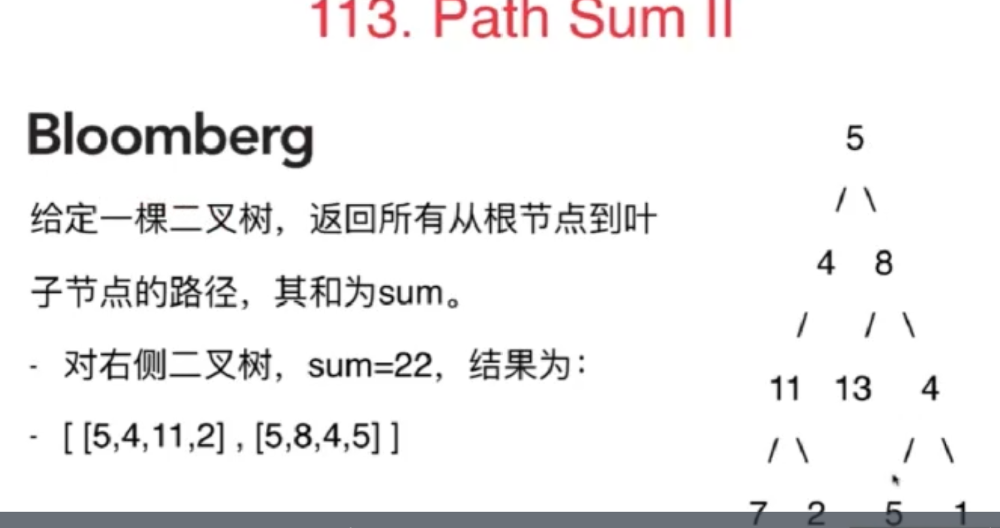
有了前面的铺垫，这题我自己独立做出来了：遍历从根节点出发的所有路径，存到res列表，然后返回res中所有满足和为targetSum的元素
# Definition for a binary tree node.
# class TreeNode:
# def __init__(self, val=0, left=None, right=None):
# self.val = val
# self.left = left
# self.right = right
class Solution:
def pathSum(self, root: Optional[TreeNode], targetSum: int) -> List[List[int]]:
if not root:
return []
def solve(root,targetSum):
res=[]
#root是叶子结点
if not (root.left or root.right):
res.append([root.val])
#root不是叶子结点,有左孩子
if root.left:
left_paths=solve(root.left,targetSum)
if left_paths:
for s in left_paths:
res.append(s+[root.val])
#root不是叶子结点，有右孩子
if root.right:
right_paths=solve(root.right,targetSum)
if len(right_paths)!=0:
for s in right_paths:
res.append(s+[root.val])
return res
res=solve(root,targetSum)
return [i[::-1] for i in res if sum(i)==targetSum]因为没有用到targetSum，所以可以写成：
# Definition for a binary tree node.
# class TreeNode:
# def __init__(self, val=0, left=None, right=None):
# self.val = val
# self.left = left
# self.right = right
class Solution:
def pathSum(self, root: Optional[TreeNode], targetSum: int) -> List[List[int]]:
if not root:
return []
def solve(root):
res=[]
#root是叶子结点
if not (root.left or root.right):
res.append([root.val])
#root不是叶子结点,有左孩子
if root.left:
left_paths=solve(root.left)
if left_paths:
for s in left_paths:
res.append(s+[root.val])
#root不是叶子结点，有右孩子
if root.right:
right_paths=solve(root.right)
if len(right_paths)!=0:
for s in right_paths:
res.append(s+[root.val])
return res
res=solve(root)
return [i[::-1] for i in res if sum(i)==targetSum]当然，如果想和前面的题统一，可以及时return：
# Definition for a binary tree node.
# class TreeNode:
# def __init__(self, val=0, left=None, right=None):
# self.val = val
# self.left = left
# self.right = right
class Solution:
def pathSum(self, root: Optional[TreeNode], targetSum: int) -> List[List[int]]:
def solve(root):
if not root:
return []
res=[]
#root是叶子结点
if not (root.left or root.right):
res.append([root.val])
return res
#root不是叶子结点,有左孩子
left_paths=solve(root.left)
for s in left_paths:
res.append(s+[root.val])
#root不是叶子结点，有右孩子
right_paths=solve(root.right)
for s in right_paths:
res.append(s+[root.val])
return res
res=solve(root)
return [i[::-1] for i in res if sum(i)==targetSum]但是，上面的方法在递归时没有用到TargetSum，而是在求得全部从根结点到叶子节点的路径后再做判断的，那能不能在递归时就确定最终的结果呢？
可以!
只需要加个判断：叶子节点的值是否等于当前递归的targetSum，更改后代码如下：
# Definition for a binary tree node.
# class TreeNode:
# def __init__(self, val=0, left=None, right=None):
# self.val = val
# self.left = left
# self.right = right
class Solution:
def pathSum(self, root: Optional[TreeNode], targetSum: int) -> List[List[int]]:
def solve(root,targetSum):
if not root:
return []
res=[]
#root是叶子结点,并且这个叶子节点的值等于当前递归的targetSum
if not (root.left or root.right) and root.val==targetSum:
res.append([root.val])
return res
#root不是叶子结点,有左孩子
left_paths=solve(root.left,targetSum-root.val)
for s in left_paths:
res.append(s+[root.val])
#root不是叶子结点，有右孩子
right_paths=solve(root.right,targetSum-root.val)
for s in right_paths:
res.append(s+[root.val])
return res
res=solve(root,targetSum)
return [i[::-1] for i in res]我根据之前的题目，也写出了BFS：
# Definition for a binary tree node.
# class TreeNode:
# def __init__(self, val=0, left=None, right=None):
# self.val = val
# self.left = left
# self.right = right
class Solution:
def pathSum(self, root: Optional[TreeNode], targetSum: int) -> List[List[int]]:
if not root:
return []
res=[]
node_queue=[root]#当前结点
path_queue=[[root.val]]#从根结点到当前结点的路径
while node_queue:
cur_node=node_queue.pop(0)
cur_path=path_queue.pop(0)
#如果当前结点是叶子结点
if not (cur_node.left or cur_node.right):
res.append(cur_path)
#不是叶子结点,有左孩子
if cur_node.left:
node_queue.append(cur_node.left)
path_queue.append(cur_path+[cur_node.left.val])
#不是叶子结点，有右孩子
if cur_node.right:
node_queue.append(cur_node.right)
path_queue.append(cur_path+[cur_node.right.val])
return [i for i in res if sum(i)==targetSum]没错，这也是求出来了所有路径，最后判断的路径和是否等于targetSum的。
借鉴了之前两个队列的方法，从上往下找。
但上面的方法仍然没有用到targetSum。
可以再加一个队列，存储从根结点到当前结点的累加值，如果当前结点是叶子结点，并且从根结点到当前叶子结点的累加值等于targetSum，就找到了一条路径。
我写的代码：
# Definition for a binary tree node.
# class TreeNode:
# def __init__(self, val=0, left=None, right=None):
# self.val = val
# self.left = left
# self.right = right
class Solution:
def pathSum(self, root: Optional[TreeNode], targetSum: int) -> List[List[int]]:
if not root:
return []
res=[]
node_queue=[root]#当前结点
path_queue=[[root.val]]#从根结点到当前结点的路径
dist_queue=[root.val]#从根结点到当前结点的累加值
while node_queue:
cur_node=node_queue.pop(0)
cur_path=path_queue.pop(0)
cur_dist=dist_queue.pop(0)
#如果当前结点是叶子结点,且从根结点到当前结点的累加值等于targetSum
if not (cur_node.left or cur_node.right) and cur_dist==targetSum:
res.append(cur_path)
#不是叶子结点,有左孩子
if cur_node.left:
node_queue.append(cur_node.left)
path_queue.append(cur_path+[cur_node.left.val])
dist_queue.append(cur_dist+cur_node.left.val)
#不是叶子结点，有右孩子
if cur_node.right:
node_queue.append(cur_node.right)
path_queue.append(cur_path+[cur_node.right.val])
dist_queue.append(cur_dist+cur_node.right.val)
return [i for i in res]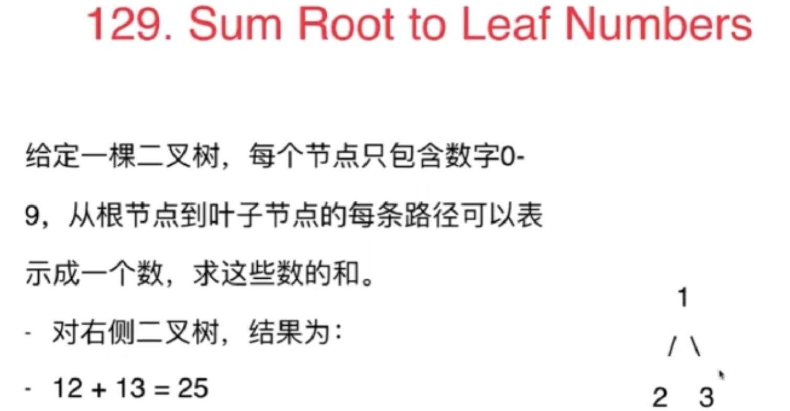
直接在之前代码最后处理下数字转字符串再转数字即可：
# Definition for a binary tree node.
# class TreeNode:
# def __init__(self, val=0, left=None, right=None):
# self.val = val
# self.left = left
# self.right = right
class Solution:
def sumNumbers(self, root: TreeNode) -> int:
def solve(root):
if not root:
return []
res=[]
#root是叶子结点,并且这个叶子节点的值等于当前递归的targetSum
if not (root.left or root.right):
res.append([root.val])
return res
#root不是叶子结点,有左孩子
left_paths=solve(root.left)
for s in left_paths:
res.append(s+[root.val])
#root不是叶子结点，有右孩子
right_paths=solve(root.right)
for s in right_paths:
res.append(s+[root.val])
return res
res=solve(root)
sum=0
for path in res:
path=path[::-1]
path=[str(i) for i in path]
sum+=int(''.join(path))
return sumBFS解法一样，也是做个后处理就AC了：
# Definition for a binary tree node.
# class TreeNode:
# def __init__(self, val=0, left=None, right=None):
# self.val = val
# self.left = left
# self.right = right
class Solution:
def sumNumbers(self, root: TreeNode) -> int:
if not root:
return []
res=[]
node_queue=[root]#当前结点
path_queue=[[root.val]]#从根结点到当前结点的路径
while node_queue:
cur_node=node_queue.pop(0)
cur_path=path_queue.pop(0)
#如果当前结点是叶子结点,且从根结点到当前结点的累加值等于targetSum
if not (cur_node.left or cur_node.right):
res.append(cur_path)
#不是叶子结点,有左孩子
if cur_node.left:
node_queue.append(cur_node.left)
path_queue.append(cur_path+[cur_node.left.val])
#不是叶子结点，有右孩子
if cur_node.right:
node_queue.append(cur_node.right)
path_queue.append(cur_path+[cur_node.right.val])
#只需加个后处理即可
sum=0
for path in res:
path=[str(i) for i in path]
sum+=int(''.join(path))
return sum以上做法取巧使用了Python的字符串转数字功能，那如果不能这样做呢？
看官方题解的DFS:
class Solution:
def sumNumbers(self, root: TreeNode) -> int:
def dfs(root: TreeNode, prevTotal: int) -> int:
if not root:
return 0
total = prevTotal * 10 + root.val
#如果是叶子结点
if not root.left and not root.right:
return total
else:
return dfs(root.left, total) + dfs(root.right, total)
return dfs(root, 0)时间复杂度：O(n)，其中 n 是二叉树的节点个数。对每个节点访问一次。
空间复杂度：O(n)，其中 n 是二叉树的节点个数。空间复杂度主要取决于递归调用的栈空间，递归栈的深度等于二叉树的高度，最坏情况下，二叉树的高度等于节点个数，空间复杂度为 O(n)。
我根据上面的官方DFS代码，写出了下面的BFS代码：
# Definition for a binary tree node.
# class TreeNode:
# def __init__(self, val=0, left=None, right=None):
# self.val = val
# self.left = left
# self.right = right
class Solution:
def sumNumbers(self, root: TreeNode) -> int:
if not root:
return 0
res=0
node_queue=[root]#存储结点
pre_queue=[0]#存储从根节点到当前结点的父节点的数字和
while node_queue:
r=node_queue.pop(0)
pre=pre_queue.pop(0)
#计算根结点到当前结点的数字和
total=pre*10+r.val
#如果是叶子结点
if not (r.left or r.right):
res+=total
#如果不是叶子结点，有左孩子
if r.left:
node_queue.append(r.left)
pre_queue.append(total)
#如果不是叶子结点，有右孩子
if r.right:
node_queue.append(r.right)
pre_queue.append(total)
return res我的pre_queue 存储的是从根结点到当前结点的父节点的对应数字和，看了下官方的BFS解法，pre_queue存的是从根结点到当前结点的对应数字和.
于是我改了一下上面的BFS代码，让pre_queue存从根结点到当前结点的对应数字和：
class Solution:
def sumNumbers(self, root: TreeNode) -> int:
if not root:
return 0
res=0
node_queue=[root]#存储结点
pre_queue=[root.val]#存储从根节点到当前结点的数字和
while node_queue:
r=node_queue.pop(0)
total=pre_queue.pop(0)
#如果是叶子结点
if not (r.left or r.right):
res+=total
#如果不是叶子结点，有左孩子
if r.left:
node_queue.append(r.left)
pre_queue.append(total*10+r.left.val)
#如果不是叶子结点，有右孩子
if r.right:
node_queue.append(r.right)
pre_queue.append(total*10+r.right.val)
return res哪种方法都可以的~~
时间复杂度：O(n)，其中 n 是二叉树的节点个数。对每个节点访问一次。
空间复杂度：O(n)，其中 nnn 是二叉树的节点个数。空间复杂度主要取决于队列，每个队列中的元素个数不会超过 n。
更复杂的递归：
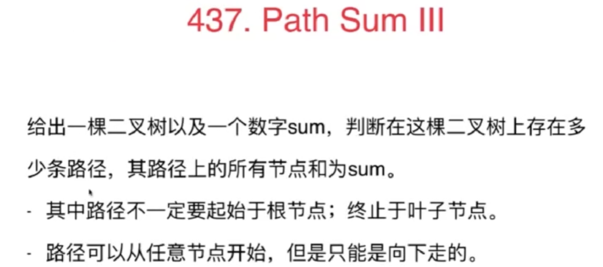
改写成Python版本：
# Definition for a binary tree node.
# class TreeNode:
# def __init__(self, val=0, left=None, right=None):
# self.val = val
# self.left = left
# self.right = right
class Solution:
def pathSum(self, root: TreeNode, targetSum: int) -> int:
if not root:
return 0
#该函数寻找以node为根结点，且包含node的路径，路径和为num
def findPath(node,num):
if not node:
return 0
res=0
if node.val==num:
res+=1
res+=findPath(node.left,num-node.val)
res+=findPath(node.right,num-node.val)
return res
#寻找以root为根结点，且包含root的路径，路径和为targetSum
res=findPath(root,targetSum)
#寻找不包含root的路径，路径和为targetSum
res+=self.pathSum(root.left,targetSum)
res+=self.pathSum(root.right,targetSum)
return res二分搜索树
所有节点的值都是唯一的。
p, q 为不同节点且均存在于给定的二叉搜索树中。
利用了二分搜索树的性质:
如果root.val都比p,q大，代表要往左边走
如果root.val都比p,q小，代表要往右边走
如果一个在左一个在右，代表得到结果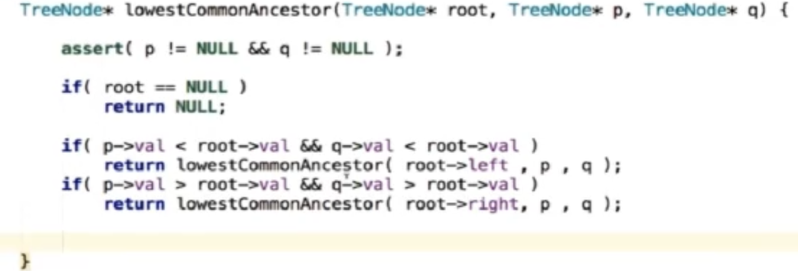
我改写成Python版本：
# Definition for a binary tree node.
# class TreeNode:
# def __init__(self, x):
# self.val = x
# self.left = None
# self.right = None
class Solution:
def lowestCommonAncestor(self, root: 'TreeNode', p: 'TreeNode', q: 'TreeNode') -> 'TreeNode':
#p和q都在左子树中
if p.val<root.val and q.val<root.val:
return self.lowestCommonAncestor(root.left,p,q)
#p和q都在右子树中
if p.val>root.val and q.val>root.val:
return self.lowestCommonAncestor(root.right,p,q)
#p和q有可能一左一右，或者其一就是root，这些情况下，它们的公共祖先就是root
return root课后习题
和上题相比，这里的树是普通的二叉树了。
class Solution:
def lowestCommonAncestor(self, root: TreeNode, p: TreeNode, q: TreeNode) -> TreeNode:
if not root or root == p or root == q: return root
left = self.lowestCommonAncestor(root.left, p, q)
right = self.lowestCommonAncestor(root.right, p, q)
if not left and not right: return # 1.
if not left: return right # 3.
if not right: return left # 4.
return root # 2. if left and right没太懂。。。
中序遍历下，输出的二叉搜索树节点的数值是有序序列。
有了这个特性，验证二叉搜索树，就相当于变成了判断一个序列是不是递增的了。
很容易懂的一个方法：判断中序遍历结果是否有序(从小到大，不重复，leetcode要求二叉搜索树中不含有重复元素)
# Definition for a binary tree node.
# class TreeNode:
# def __init__(self, val=0, left=None, right=None):
# self.val = val
# self.left = left
# self.right = right
class Solution:
def isValidBST(self, root: TreeNode) -> bool:
arr=[]
def dfs(root):
if not root:
return
dfs(root.left)
arr.append(root.val)
dfs(root.right)
dfs(root)
n=len(arr)
for i in range(1,n):
if arr[i]<=arr[i-1]:
return False
return True上面的方法是先把中序遍历的结果存起来，再进行判断，也可以同时进行：
class Solution:
def isValidBST(self, root: TreeNode) -> bool:
cur_max = -float("INF")
def _isValidBST(root):
nonlocal cur_max
# 规律: BST的中序遍历节点数值是从小到大.
if not root:
return True
is_left_valid = _isValidBST(root.left)
if cur_max < root.val:
cur_max = root.val
else:
return False
is_right_valid = _isValidBST(root.right)
return is_left_valid and is_right_valid
return _isValidBST(root)也可以写成一个方法：
class Solution:
cur_max = -float("INF")
def isValidBST(self, root: TreeNode) -> bool:
# 规律: BST的中序遍历节点数值是从小到大.
if not root:
return True
is_left_valid = self.isValidBST(root.left)
if self.cur_max < root.val:
self.cur_max = root.val
else:
return False
is_right_valid = self.isValidBST(root.right)
return is_left_valid and is_right_valid陷阱：不能单纯的比较左节点小于中间节点，右节点大于中间节点就完事了。
也可以写成非递归形式的中序遍历：
class Solution:
def isValidBST(self, root: TreeNode) -> bool:
stack = []
p = root
pre = None
while p or stack:
while p:
stack.append(p)
p = p.left
p = stack.pop()
if pre and p.val <= pre.val:
return False
pre = p
p = p.right
return True
大佬的代码，能看懂：
# Definition for a binary tree node.
# class TreeNode:
# def __init__(self, val=0, left=None, right=None):
# self.val = val
# self.left = left
# self.right = right
class Solution:
def deleteNode(self, root: TreeNode, key: int) -> TreeNode:
if not root: return root #第一种情况：没找到删除的节点，遍历到空节点直接返回了
if root.val == key:
if not root.left and not root.right: #第二种情况：左右孩子都为空（叶子节点），直接删除节点， 返回NULL为根节点
del root
return None
if not root.left and root.right: #第三种情况：其左孩子为空，右孩子不为空，删除节点，右孩子补位 ，返回右孩子为根节点
tmp = root
root = root.right
del tmp
return root
if root.left and not root.right: #第四种情况：其右孩子为空，左孩子不为空，删除节点，左孩子补位，返回左孩子为根节点
tmp = root
root = root.left
del tmp
return root
else: #第五种情况：左右孩子节点都不为空，则将删除节点的左子树放到删除节点的右子树的最左面节点的左孩子的位置
v = root.right
while v.left:
v = v.left
v.left = root.left
tmp = root
root = root.right
del tmp
return root
if root.val > key: root.left = self.deleteNode(root.left,key) #左递归
if root.val < key: root.right = self.deleteNode(root.right,key) #右递归
return root
# Definition for a binary tree node.
# class TreeNode:
# def __init__(self, val=0, left=None, right=None):
# self.val = val
# self.left = left
# self.right = right
class Solution:
def sortedArrayToBST(self, nums: List[int]) -> TreeNode:
def bfs(left,right):
if left>right:
return
mid=(right+left)//2
root=TreeNode(nums[mid])
root.left=bfs(left,mid-1)
root.right=bfs(mid+1,right)
return root
return bfs(0,len(nums)-1)
我直接：
# Definition for a binary tree node.
# class TreeNode:
# def __init__(self, val=0, left=None, right=None):
# self.val = val
# self.left = left
# self.right = right
class Solution:
def kthSmallest(self, root: Optional[TreeNode], k: int) -> int:
res=[]
def inorder_bfs(root):
if not root:
return
inorder_bfs(root.left)
res.append(root.val)
inorder_bfs(root.right)
inorder_bfs(root)
return res[k-1]官方也是，同时也给出了迭代的方法：
class Solution:
def kthSmallest(self, root, k):
"""
:type root: TreeNode
:type k: int
:rtype: int
"""
stack = []
while True:
while root:
stack.append(root)
root = root.left
root = stack.pop()
k -= 1
if not k:
return root.val
root = root.right给定一个仅包含数字 2-9 的字符串，返回所有它能表示的字母组合。答案可以按 任意顺序 返回。
给出数字到字母的映射如下（与电话按键相同）。注意 1 不对应任何字母。
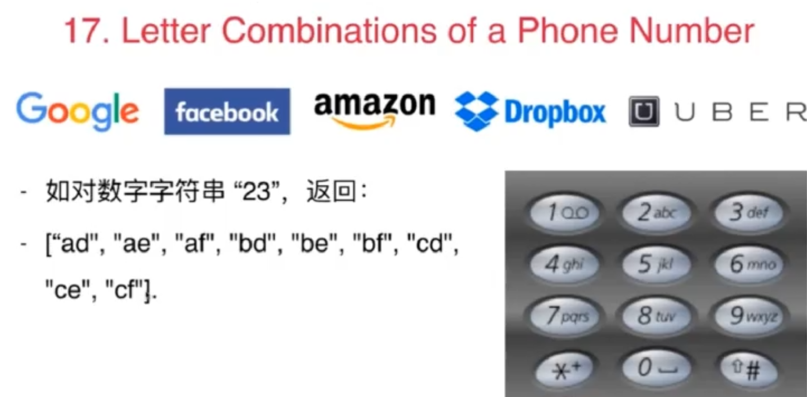

这是一个树形问题。

官方题解：
class Solution:
def letterCombinations(self, digits: str) -> List[str]:
if not digits:
return list()
phoneMap = {
"2": "abc",
"3": "def",
"4": "ghi",
"5": "jkl",
"6": "mno",
"7": "pqrs",
"8": "tuv",
"9": "wxyz",
}
def backtrack(index: int):
#找到一个结果
if index == len(digits):
combinations.append("".join(combination))
return
digit = digits[index]
for letter in phoneMap[digit]:
#选择
combination.append(letter)
#回溯
backtrack(index + 1)
#撤销选择
combination.pop()
combination = list()
combinations = list()
backtrack(0)
return combinationsor
class Solution:
def letterCombinations(self, digits: str) -> List[str]:
if not digits:
return list()
phoneMap = {
"2": "abc",
"3": "def",
"4": "ghi",
"5": "jkl",
"6": "mno",
"7": "pqrs",
"8": "tuv",
"9": "wxyz",
}
def backtrack(digits,index: int):
#找到一个结果
if index == len(digits):
combinations.append("".join(combination))
return
digit = digits[index]
for letter in phoneMap[digit]:
#选择
combination.append(letter)
#回溯
backtrack(digits,index + 1)
#撤销选择
combination.pop()
combination = list()
combinations = list()
backtrack(digits,0)
return combinations这里回溯函数传不传digits都可以~
评论区更容易理解的解法：
class Solution:
def letterCombinations(self, digits: str) -> List[str]:
#数字对应的英文字母列表
word_list = ["0", "0", "abc", "def", "ghi", "jkl", "mno", "pqrs", "tuv", "wxyz"]
#如果是空字符串直接返回空列表
if digits == "":
return []
#保存结果列表
result = []
#输入的digits的长度，作为回溯函数返回的判断条件
length = len(digits)
#回溯函数（path当前路径，默认为""）
def back_track(digits, index, path):
#如果目前path的长度和digits的长度相等，说明已经遍历完一趟，返回结果列表
if len(path) == length:
#加入result列表
result.append(path)
#返回
return
#遍历当前索引的数字对应的英文列表
for word in word_list[int(digits[index])]:
#路径加上当前字母
path = path + word
#递归下一个数字对应的英文列表
back_track(digits, index + 1, path)
#撤销当前字母
path = path[:-1]
back_track(digits, 0, "")
return result不传path也可以：
class Solution:
def letterCombinations(self, digits: str) -> List[str]:
#数字对应的英文字母列表
word_list = ["0", "0", "abc", "def", "ghi", "jkl", "mno", "pqrs", "tuv", "wxyz"]
#如果是空字符串直接返回空列表
if digits == "":
return []
#保存结果列表
result = []
#输入的digits的长度，作为回溯函数返回的判断条件
length = len(digits)
#回溯函数（path当前路径，默认为""）
def back_track(digits, index):
nonlocal path
#如果目前path的长度和digits的长度相等，说明已经遍历完一趟，返回结果列表
if index == length:
#加入result列表
result.append(path)
#返回
return
#遍历当前索引的数字对应的英文列表
for word in word_list[int(digits[index])]:
#路径加上当前字母
path = path + word
#递归下一个数字对应的英文列表
back_track(digits, index + 1)
#撤销当前字母
path = path[:-1]
path=""
back_track(digits, 0)
return result课后习题：

有点难
class Solution:
def restoreIpAddresses(self, s: str) -> List[str]:
SEG_COUNT = 4
ans = list()
segments = [0] * SEG_COUNT#[0,0,0,0]
def dfs(segId: int, segStart: int):
# 如果找到了 4 段 IP 地址并且遍历完了字符串，那么就是一种答案
if segId == SEG_COUNT:
if segStart == len(s):
ipAddr = ".".join(str(seg) for seg in segments)
ans.append(ipAddr)
return
# 如果还没有找到 4 段 IP 地址就已经遍历完了字符串，那么提前回溯
if segStart == len(s):
return
# 由于不能有前导零，如果当前数字为 0，那么这一段 IP 地址只能为 0
if s[segStart] == "0":
segments[segId] = 0
dfs(segId + 1, segStart + 1)
# 一般情况，枚举每一种可能性并递归
addr = 0
for segEnd in range(segStart, len(s)):
addr = addr * 10 + (ord(s[segEnd]) - ord("0"))
if 0 < addr <= 255:
segments[segId] = addr
dfs(segId + 1, segEnd + 1)
else:
break
dfs(0, 0)
return ans来个更详细的注释：
class Solution:
def restoreIpAddresses(self, s: str) -> List[str]:
SEG_COUNT = 4
ans = list()
segments = [0] * SEG_COUNT#[0,0,0,0]
def dfs(segId: int, segStart: int):
# 如果找到了 4 段 IP 地址并且遍历完了字符串，那么就是一种答案
if segId == SEG_COUNT:
if segStart == len(s):
ipAddr = ".".join(str(seg) for seg in segments)
ans.append(ipAddr)
return
# 如果还没有找到 4 段 IP 地址就已经遍历完了字符串，那么提前回溯
if segStart == len(s):
return
# 如果还没有遍历完字符串就已经找到 4 段 IP 地址，那么提前回溯
if segId==SEG_COUNT:
return
# 由于不能有前导零，如果当前数字为 0，那么这一段 IP 地址只能为 0
if s[segStart] == "0":
segments[segId] = 0
dfs(segId + 1, segStart + 1)
# 一般情况，枚举每一种可能性并递归
addr = 0
for segEnd in range(segStart, len(s)):
#addr = addr * 10 + (ord(s[segEnd]) - ord("0"))
addr=addr*10+int(s[segEnd])#更易懂~
if 0 < addr <= 255:#等于0的情况在上面已经单独处理了
#加入当前数字了
segments[segId] = addr
#回溯吧
dfs(segId + 1, segEnd + 1)
#撤销的过程：对于之前的问题，都是直接撤销，"撤销"等价于出栈或pop字符串最后一位，
#但是这里是切割问题，"撤销"等价于右移切割点，也就是for做的,更具体的，addr会变回回溯前的值。
else:
break
dfs(0, 0)
return ans我想改成用list，但死活不通过"010010"：
class Solution:
def restoreIpAddresses(self, s: str) -> List[str]:
SEG_COUNT = 4
ans = list()
segments = list()
def dfs(segStart: int):
nonlocal segments
print(segStart,segments)
# 如果找到了 4 段 IP 地址并且遍历完了字符串，那么就是一种答案
if len(segments) == SEG_COUNT and segStart == len(s):
ipAddr = ".".join(str(seg) for seg in segments)
ans.append(ipAddr)
return
# 如果还没有找到 4 段 IP 地址就已经遍历完了字符串，那么提前回溯
if segStart == len(s):
print('a:',segStart)
return
# 如果还没有遍历完字符串就已经找到 4 段 IP 地址，那么提前回溯
if len(segments)==SEG_COUNT:
print('b:',segStart)
return
# 由于不能有前导零，如果当前数字为 0，那么这一段 IP 地址只能为 0
if s[segStart] == "0":
#print('00000')
segments.append(0)
dfs(segStart + 1)
# 一般情况，枚举每一种可能性并递归
addr = 0
for segEnd in range(segStart, len(s)):
#addr = addr * 10 + (ord(s[segEnd]) - ord("0"))
addr=addr*10+int(s[segEnd])#更易懂~
if 0 < addr <= 255:#等于0的情况在上面已经单独处理了
#加入当前数字
segments.append(addr)
#回溯
dfs(segEnd + 1)
#撤销加入当前数字
segments.pop()
else:
break
dfs(0)
return ans可能是for那里的addr有个累加的过程，单纯的pop会导致之前累加的结果丢失？？？


递归用来纵向遍历，for循环用来横向遍历，切割线（就是图中的红线）切割到字符串的结尾位置，说明找到了一个切割方法。
class Solution:
def partition(self, s: str) -> List[List[str]]:
res = []
path = [] #放已经回文的子串
# 双指针法判断是否是回文串
def isPalindrome(s):
n = len(s)
i, j = 0, n - 1
while i < j:
if s[i] != s[j]:return False
i += 1
j -= 1
return True
def backtrack(s, startIndex):
if startIndex == len(s): # 如果起始位置已经大于s的大小，说明已经找到了一组分割方案了
res.append(path[:])#拷贝一份当前副本，因为之后path还会变的
return
for i in range(startIndex, len(s)):
p = s[startIndex:i+1] # 获取[startIndex,i+1]在s中的子串
if isPalindrome(p): # 是回文子串
path.append(p)
else: continue #不是回文，跳过
backtrack(s, i + 1)
path.pop() #回溯过程，弹出本次已经填在path的子串
backtrack(s, 0)
return res这种题还是有些难的，目前自己很难写出来，但代码基本都是套模板，之后还要多品味~